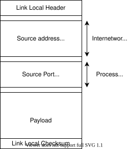
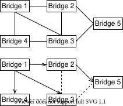
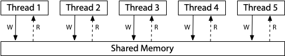
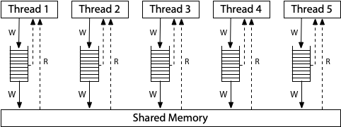
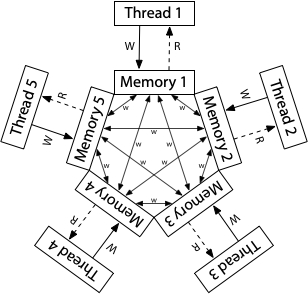

0. Preface
-
This is a simple collection of some of my notes. Some parts are incomplete, I'll mark them with a "WIP" tag.
-
No license. I am doing this for myself. If you find it helpful, that is great.
-
Please send any feedback/errors to tteja2010 at gmail dot com .
-
I went through the Linux code and then later read/understood OS concepts. My way of looking at OS related topics is hence biased towards Linux, which may make my notes weird/unnatural.
-
I like my notes to be very simple. If I were to forget the past couple of years of my life due to an accident, I should still be able to catch up by going through my notes (Assuming I discover that I had written these notes) That is how simple it should be. I don't want to assume anything about the reader (my amnesiac self who just completed his bachelors) while writing them.
Linux Networking Notes
This subsection contains my notes on the networking subsystem.
Before we jump in, notes on how packets are represented in Linux and visualizing their processing.
N.0.1 Packet Representation in Linux
Packets are represented using sk_buff (socket buffer) in Linux. The struct is declared in include/linux/skbuff.h. I will call a packet as skb interchangeably from now on. The sk_buff struct contains two parts, the packet data and it's meta data.
Firstly it contains pointers to the actual data. The actual packet with Ethernet, IP, transport headers and payload that has made it's way over the network will be put in some memory that is allocated. The simplest way this is done is to allocate a contiguous memory block which will contain the whole packet. (We will see in later pages how very large packets can be created using lists of such blocks or how number of data copies can be reduced by having multiple small chunks of data.) skb->head points to the start of the this block, and skb->end points to the end of this block. The whole block need not contain meaningful data. skb->data points to the place where the packet data starts, and skb->tail points to the place where the packet data ends. This allows the packet to have some head room and tail room if the packet needs to expand. These four pointers are used to point to the actual data. They are placed at the end of the sk_buff struct. David Miller's page on skb_data describes skb data in greater detail.
An image from the above page:

Additionally the skb contains lots of meta data. Without checking the actual data, a fully filled skb can provide the protocol information, checksum details, it's corresponding socket, etc. The meta data is information that is extracted from the packet data or information attached to the current packet that can be used by all the layers. A few of these fields are explained in David Miller's page How SKBs work.
This is similar to how photographs are saved. One part is the actual image, the second part is meta data like it's dimensions, ISO, aperture, camera model, location information, etc. The meta data by itself is not useful but adds detail to the original data.
I'll add a page which describes the skb and it's fields in greater detail. TODO.
N.0.2 Visualizing Packet Processing
This is not a standard way of visualizing, but I think this is the right way to visualize packet processing and cant visualize in any other way. Receiving packets is in the bottom to top direction. And transmitting packets is in the top to bottom direction. Forwarding to a different layer is left to right. While receiving packets, drivers receive data first. The bottom most layer where the drivers stay. The drivers hand over the packet to the core network. The core networking code then passes it over to the right protocol stack(s). After the protocol stack processing is done, it enters socket layer, from where the user picks up the packet.

N.0.2.1 Top half and bottom half processing
The path from the driver to the socket queue is divided into two halves.
The top half happens first, the driver gets the raw packet and creates a skb. After an skb is created it calls functions to hand it over to the core networking code. The top half before exiting schedules the bottom half. Top half runs per packet and exits.
The bottom half begins picking up each packet and starts processing them. The packet is passed trough IP, UDP stacks and finally enqueues it into the socket queue. This is done for a bunch of packets. If there are packets that are still pending, the bottom half schedules itself and exits.
IMPORTANT:
- The top half is below the bottom half in my figure.
- I can use bottom half OR softirq processing interchangeably.
- Softirq processing done while receiving packets is also called NET_RX processing. I can use this as well. :)
- Core network code runs in both these halves. But most of it is in softirq processing.
With this, basic information we can start describing the RX and TX processing paths.
N1 Setup Qemu
These notes are based on the following videos:
- Running an external custom kernel in Fedora 32 under QEMU: Kernel Debugging Part 1 I am more used to Ubuntu, so I chose it instead.
- GDB on the Linux Kernel.
The script below is the same as the one described in these videos.
Please watch both the videos before continuing further.
Like described in the article on UML Setup, I like to learn by running a VM and attaching it via GDB. KVM and QEMU are the newer and well supported VM solutions. This page is a tutorial on how to launch a debug instance in QEMU and attach to it using GDB.
Install QEMU (check Qemu download page for distribution specific instructions).
N1.1 Setup & build a kernel with debug symbols
Clone the kernel from kernel git repo.
git clone git://git.kernel.org/pub/scm/linux/kernel/git/torvalds/linux.git linux
cd linux
Next run "make menuconfig" to modify a few configurations. On running the command a ncurses interface to enable/disable options will open. Use the arrow keys to move between options and 'Y' and 'N' keys to include/exclude options. First enable CONFIG_DEBUG_KERNEL. It is located under "Kernel hacking" as "Kernel debugging". Next disable RANDOMIZE_MEMORY_PHYSICAL_PADDING. It is located under "Processor type and features" as "Randomize the kernel memory sections". After making the changes save the changes and exit the menuconfig interface. A lot of youtube videos explain the same in detail, check them if confused. To reset any changes delete the ".config" file and start over by running "make defconfig". Finally run make. It will take some to compile the kernel. Meanwhile move to the next step and install a VM in qemu.
make defconfig
make menuconfig # enable CONFIG_DEBUG_KERNEL,
# disable RANDOMIZE_MEMORY_PHYSICAL_PADDING
make -j1 # replace 1 with the number of CPUs that make
# should use to build the kernel.
N1.2 Create an image for QEMU
Move out of the linux directory and create an image for QEMU.
qemu-img create kernel-dev.img 20G
Next download ubuntu's server iso image from here. It is a ~1GB file which can be used for a Linux server. You can alternatively install the desktop version if you are more comfortable with a GUI. Move the downloaded iso file into the same directory. Finally save the script below as start.sh.
#!/bin/bash
#startup.sh
KERNEL="linux/arch/x86_64/boot/bzImage"
RAM=1G
CPUS=2
DISK="kernel-dev.img"
if [ $# -eq 1 ]
then
qemu-system-x86_64 \
-enable-kvm \
-smp $CPUS \
-drive file=$DISK,format=raw,index=0,media=disk \
-m $RAM \
-serial stdio \
-drive file=$1,index=2,media=cdrom ## comment to run vanilla install
# use this option to boot using a cd iso
else
qemu-system-x86_64 \
-enable-kvm \
-smp $CPUS \
-drive file=$DISK,format=raw,index=0,media=disk \
-m $RAM \
-serial stdio \
-kernel $KERNEL \
-initrd initrd.img \
-S -s \
-cpu host \
-append "root=/dev/mapper/ubuntu--vg-ubuntu--lv ro nokaslr" \
-net user,hostfwd=tcp::5555-:22 -net nic \
# use this option to run debug kernel
# see the video 1 on how to pull the initrd.img
# the "root=/dev/ ..." command needs to pulled from grub.cfg (see video 1)
fi
The above script when given an ISO file passes it as an CD to the QEMU instance. This way we can install ubuntu into "kernel-dev.img".
If no arguments are provided it tries to run the OS installed on kernel-dev.img. This way we can use the script to start the VM after we have completed installing ubuntu. At this point the directory structure should look like this:
.
├── kernel-dev.img
├── linux
├── ubuntu-21.04-live-server-amd64.iso
└── startup.sh
First to install ubuntu run: (if superuser privileges needed, run with sudo)
./startup.sh ubuntu-21.04-live-server-amd64.iso
Go through all the steps and install ubuntu. A lot of YouTube videos show the complete process. Use them as a reference if necessary.
Once the installation is complete, comment out the line which provides the cdrom option to boot into an vanilla ubuntu install.
./startup.sh ubuntu-21.04-live-server-amd64.iso #cdrom line commented
Now wait for the kernel compilation to complete. Then run the script without the arguments to boot into the kernel we built.
./startup.sh
The boot will wait for GDB to connect. On a separate terminal run:
gdb linux/vmlinux
Within the gdb prompt then run "target remote :1234" to connect to QEMU. The bt command should then show some stack within QEMU.
Run "hbreak start_kernel" to add a hardware breakpoint at start_kernel() and then run "continue". The VM would then begin booting and will stop in the start_kernel function.
Add other hardware breakpoints (since QEMU uses hardware acceleration for Virtualization, normal SW breakpoints will not work) and start tinkering. The network options are similar to those of UML. Thses options have been commented in the above script.
N1.3 Network setup
By default the script provides an interface via which the VM can access both internet and the host machine (over ssh). This is the SLIRP networking mode. Follow the link here to read more.
The interface will be created. If the interface does not have an address, run dhclient on the interface so it is assigned an address. Next install an sshserver, if not installed during ubuntu installation, so we can access the guest over ssh.
sudo dhclient eth0 # provide the right interface name.
sudo apt update # needed to update apt cache.
sudo apt install openssh-server
Finally to login into the guest machine, run:
ssh -p 5555 localhost
N1. Setup UML (older)
SKIP THIS IF YOU WERE ABLE TO SETUP QEMU. This page is here only for completeness, but is not necessary to experiment with a kernel.
I prefer to learn/tinker with linux using UML. UML is User mode linux, which is a simple VM. It emulates a uniprocessor linux system, and can run even on machines with very old hardware (like my laptop). Check the UML homepage for additional details. This page is just to a simple tutorial on how to build and run it. I have also added sections on how to attach it to GDB for easy debugging and a section on how to setup basic networking between multiple UMLs which you can skip in the first read.
N0.1 Clone and build the kernel
Clone the kernel, and build it. Make defconfig sets up the default kernel config. The kernel config is a set of kernel features which will either be compiled into the kernel or will be compiled as modules. The architecture for which we are configuring is the UM (user mode) architechture. While building the config, you may be prompted to choose a configuration. Press enter to choose the default configuration. Once the configuration is done, a ".config" file will be populated with the chosen options. Begin compiling the code. Based on your machine's CPU capabities, replace 1 with the number of parallel compilation jobs you want make to run. Please remain patient as the very first compilation will take some time.
git clone git://git.kernel.org/pub/scm/linux/kernel/git/torvalds/linux.git linux
cd linux
make defconfig ARCH=um
make -j1 ARCH=um
A new file "linux" will be created. This is the UML executable which runs as an application on the host machine. It needs a few other files and arguments to run, which will be explained in the next section.
N0.1.1 Kernel config [OPTIONAL]
The kernel src includes a neat way to configure the kernel. Run make menuconfig to configure various options. A ncurses interface should start up, with the instructions provided in the top. Pressing Y includes a config and N excludes a config. After configuring the kernel, save and exit the config. The .config file will get updated with the necessary configuration. To build the uml binary with debug symbols, edit KBUILD_HOSTCFLAGS in the Makefile. Just add a '-g' option at the end. The kernel can then be rebuilt with the new configuration.
make menuconfig ARCH=um
make -j1 ARCH=um
Makefile diff:
HOSTCC = gcc
HOSTCXX = g++
-KBUILD_HOSTCFLAGS := -Wall -Wmissing-prototypes -Wstrict-prototypes -O2 \
+KBUILD_HOSTCFLAGS := -Wall -Wmissing-prototypes -Wstrict-prototypes -O2 -g \
-fomit-frame-pointer -std=gnu89 $(HOST_LFS_CFLAGS) \
$(HOSTCFLAGS)
KBUILD_HOSTCXXFLAGS := -O2 $(HOST_LFS_CFLAGS) $(HOSTCXXFLAGS)
N0.2 Rootfs setup
We have a compiled kernel but we still need a init script and other userspace programs. We need a rootfs to emulate the disk. There are a lot of blogs which describe how to build a rootfs. We will download a debian rootfs that is provided by google. Run the following command to download the rootfs and uncompress it. On uncompressing it a 1GiB net_test.rootfs.20150203 should be available.
wget -nv https://dl.google.com/dl/android/net_test.rootfs.20150203.xz
unxz net_test.rootfs.20150203.xz
Note: If the above download does not work, check the Google nettest script where the rootfs link can be found. Google uses UML to run nettests on the kernels OEMs ship to check for possible bugs.
We now have everything needed to run the UML.
.2.1 Adding files/programs to rootfs [OPTIONAL]
The rootfs now contains certain programs and a init script which can be used to boot into the UML. We may need to install programs for our testing or need to move files between UML and the host OS. By mounting it into a directory the rootfs contents can be accessed.
mkdir temp
sudo mount net_test.rootfs.20150203 temp
Copying from/to the directory is equivalent to copying files from/to the UML. In the below example I am copying my tmux configuration files into the rootfs. When I boot into UML, I will find the config file in the home directory. (Super user privilages are needed to add/remove files from the rootfs).
sudo cp ~/.tmux.conf temp/home/
By chroot-ing into the mounted directory, any necessary programs can be installed. On running chroot, you will able to edit the rootfs with super user privilages. I am installing tmux in the below code and then exiting the chroot shell.
sudo chroot temp
apt-get update
apt-get install tmux
exit
Once all the changes are done, unmount the rootfs.
sudo umount temp
0.2.1.1 apt-get is failing
Note: apt-get update may fail printing the following error:
Err http://ftp.jp.debian.org wheezy Release.gpg
Connection failed
If the /etc/hosts file contains an address for a particular hostname, the system will not do an additional DNS lookup. In this case, the address corresponding to ftp.jp.debian.org is incorrect, causing apt-get to fail. Run the command "dig ftp.jp.debian.org" in the host machine (not within chroot) to get the right address. Update the IP address to "133.5.166.3". Finally /etc/hosts should contain the following entries:
127.0.0.1 localhost
::1 localhost ip6-localhost ip6-loopback
fe00::0 ip6-localnet
ff00::0 ip6-mcastprefix
ff02::1 ip6-allnodes
ff02::2 ip6-allrouters
133.5.166.3 ftp.jp.debian.org
0.2.1.2 apt-get is still failing !!!
OK, dont worry, download my rootfs from my github repo here.
0.3 Take it for a spin
Finally if all this works out you are ready to start a UML instance. Just run the following command, where you provide path to rootfs as the value against "ubda", and 256MiB as the RAM. DO NOT forget the "M" in 256M, else UML will try to boot with just to 256Bytes of RAM, and fail :). I usually provide 256MiB RAM, you can go as low as 100 or 50MiB.
./linux ubda=net_test.rootfs.20150203 mem=256M
You will see the VM booting, printing dmesg, bringing up the various kernel susbsystems. Finally when a promt to enter the password appears, enter root as the password. Play around with the tiny VM. When the fun ends, run "halt" to shutdown UML.
0.4 Attach GDB
It is fun to add breakpoints and view specific code in GDB. To do this, we have to first find the process id (PID) of the main UML process. Run the following command to find the UML pid. The output should show multiple PIDs
$ ps aux | grep ubda
0 t teja 27089 12160 2 80 0 - 17629 ptrace 16:52 pts/6 00:00:18 ./linux ubda=../rootfs_pool/net_test.rootfs.20150203 mem=50M
1 S teja 27094 27089 0 80 0 - 17629 read_e 16:52 pts/6 00:00:00 ./linux ubda=../rootfs_pool/net_test.rootfs.20150203 mem=50M
1 S teja 27095 27089 0 80 0 - 17629 poll_s 16:52 pts/6 00:00:00 ./linux ubda=../rootfs_pool/net_test.rootfs.20150203 mem=50M
1 S teja 27096 27089 0 80 0 - 17629 poll_s 16:52 pts/6 00:00:00 ./linux ubda=../rootfs_pool/net_test.rootfs.20150203 mem=50M
1 t teja 27097 27089 0 80 0 - 5206 ptrace 16:52 pts/6 00:00:00 ./linux ubda=../rootfs_pool/net_test.rootfs.20150203 mem=50M
1 t teja 27288 27089 0 80 0 - 5339 ptrace 16:52 pts/6 00:00:00 ./linux ubda=../rootfs_pool/net_test.rootfs.20150203 mem=50M
1 t teja 27352 27089 0 80 0 - 4990 ptrace 16:52 pts/6 00:00:00 ./linux ubda=../rootfs_pool/net_test.rootfs.20150203 mem=50M
1 t teja 27353 27089 0 80 0 - 5294 ptrace 16:52 pts/6 00:00:00 ./linux ubda=../rootfs_pool/net_test.rootfs.20150203 mem=50M
1 t teja 29405 27089 0 80 0 - 5003 ptrace 16:53 pts/6 00:00:00 ./linux ubda=../rootfs_pool/net_test.rootfs.20150203 mem=50M
1 t teja 29408 27089 0 80 0 - 5390 ptrace 16:53 pts/6 00:00:00 ./linux ubda=../rootfs_pool/net_test.rootfs.20150203 mem=50M
1 t teja 29410 27089 1 80 0 - 5717 ptrace 16:53 pts/6 00:00:08 ./linux ubda=../rootfs_pool/net_test.rootfs.20150203 mem=50M
0 S teja 30278 3682 0 80 0 - 5500 pipe_w 17:05 pts/1 00:00:00 grep --color=auto ubda
The third column is the process id and the fourth column is the parent PID. In the above output PID 27089 starts and then spawns the other threads. Attach gdb to the the main parent thread, which is 27089 in the above example.
sudo gdb -p 27089
GDB will read the symbols from linux and attach itself. Play around, check the backtrace, etc. All globals are now accessable.
0.5 A private UML subnet
In most cases we want to play around with two UMLs connected to each other and ignorant of the rest of the world. In such cases, the simplest way is to connect them using the mcast transport. Make copies of the rootfs, for each UML instance. In this case have two copies ready, and run them with one additional argument "eth0". This will add an additional eth0 interface. We set eth0 to mcast. i.e. the eth0 interfaces in both the instances are connected over mcast.
./linux ubda=net_test.rootfs.20150203_1 mem=256M eth0=mcast
./linux ubda=net_test.rootfs.20150203_2 mem=256M eth0=mcast
Assign addresses to the eth0 interfaces, and they are ready. You try pinging the other UML. Command to assign address is:
ip address add 192.168.1.1/24 dev eth0
The full mcast readme is here. It contains details to create more complex mcast networks.
On assigning mcast to a eth device, each UML instance opens sockets which listen to multicast traffic. If a multicast address is not assigned (like above), all the instances listen to 239.192.168.1 . All packets are received and then filtered out based on destination MAC address. The packets can even be seen in packetdumps collected in the host OS. Quoting from the above readme, "It's basically like an ethernet where all machines have promiscuous mode turned on". Bad for performance, but very easy to setup.
N2. Packet RX path 1 : Basic
This page describes the code flow while receiving a packet. It begins with the packet just entering the core networking code, top half and bottom half processing, basic flow through the IP and UDP layers and finally the packet is enqueued into a socket queue.
Additionally hash based software packet steering across CPUs (RPS and RSS), Inter Processor Interrupts (IPI) and scheduling softirq processing is described. They can be ignored in the first read and can be revisited in later runs after gaining additional context. These sections have been marked OPTIONAL. NAPI will be described in later pages, all NAPI APIs are ignored now.
N2.1 Enter the Core, top half processing
We assume that the driver has already picked up the packet data and has created a skb. (We will look at how drivers create skbs in the page describing NAPI). This packet needs to be sent up to the core. The kernel provides two simple function calls to do this.
netif_rx()
netif_rx_ni()
netif_rx() does two things,
-
Enqueue the packet into a queue which contains packets that need processing. The kernel maintains a softnet_data structure for each CPU. It is the core structure that facilitates network processing. Each softnet_data struct contains a "input_pkt_queue" into which packets that need to be processed will be enqueued. This queue is protected by a spinlock that is part of the queue (calls to rps_lock() and rps_unlock() are to lock/unlock the spinlock). The input_pkt_queue is of type sk_buff_head, which is used within by kernel to represent skb lists. Before enqueuing, if the queue length is more than
netdev_max_backlog(whose default length is 1000), the packet is dropped. This value can be modified by changing/proc/sys/net/core/netdev_max_backlog. For each each packet drop sd->dropped is incremented. Certain numbers are maintained by softnet_data, I'll add a page describing the struct. TODO -
After successfully enqueueing the packet, netif_rx schedules softirq processing if it has not already been scheduled. The next section describes how softirq is scheduled.
Parts of the code have been added below. All the core networking functions are described in net/core/dev.c.
netif_rx()
{
netif_rx_internal()
{
enqueue_to_backlog()
{
// checks on queue length
rps_lock(sd);
__skb_queue_tail(&sd->input_pkt_queue, skb);
rps_unlock(sd);
____napi_schedule(sd, &sd->backlog)
{
// if not scheduled already schedule softirq
__raise_softirq_irqoff(NET_RX_SOFTIRQ);
}
}
}
}
netif_rx() and netif_rx_ni() are very similar except the later additionally begins softirq processing immediately, which will be explained in subsequent section.
This ends the top half processing, bottom half was scheduled, which will undertake rest of the packet processing.
N2.2 Softirqs, Softirq Scheduling [OPTIONAL]
One detail that I have ignored in the previous discussion is to specify which CPU the top and bottom half actually run.
The top half runs in the hardware interrupt (IRQ) context, which is a kernel thread which can be on any CPU. (This description is not really true, I have a separate page planned on interrupts where this will be described in more detail. Till then this way of visualizing it is not really wrong). Say it runs on CPU0, i.e. netif_rx() is called on CPU0. The packet will be enqueued onto CPU0's input_packet_queue. The kernel thread will then schedule softirq processing on CPU0 and exit. The bottom half will also run on the same CPU. This section describes how the bottom half is scheduled by the top half and how softirq begins.
Just Google what hard interrupts (IRQ) and soft interrupts (softirq) are for some background. Hardware interrupts (IRQs) will stop all processing. For interrupts that take very long to run, some work is done in IRQ and the rest is done in a softirq. Packet processing is one such task that takes very long to complete so NET_RX is the corresponding soft interrupt which takes care of packet processing.
Linux currently has the following softirqs declared in include/linux/interrupt.h
enum
{
HI_SOFTIRQ=0,
TIMER_SOFTIRQ,
NET_TX_SOFTIRQ,
NET_RX_SOFTIRQ,
BLOCK_SOFTIRQ,
IRQ_POLL_SOFTIRQ,
TASKLET_SOFTIRQ,
SCHED_SOFTIRQ,
HRTIMER_SOFTIRQ, /* Unused */
RCU_SOFTIRQ,
NR_SOFTIRQS
};
The names are mostly indicative of the subsystem each softirq serves. During kernel initialization, a function is registered for each of these softirqs. When softirq processing is needed, this function is called.
For example after core networking init is done, net_dev_init() registers net_rx_action and net_tx_action as the functions corresponding to NET_RX and NET_TX.
open_softirq(NET_TX_SOFTIRQ, net_tx_action);
open_softirq(NET_RX_SOFTIRQ, net_rx_action);
A softirq is scheduled by calling raise_softirq(), which internally disables irqs and calls __raise_softirq_irqoff(). This function sets a bit corresponding to the softirq in the percpu bitmask irq_stat.__softirq_pending. The bitmask is used to track all pending softirqs on the CPU. This operation must be done with all interrupts are disabled on the CPU. Without interrupts disabled, the same bitmask can be overwritten by another interrupt handler, undoing the current change.
Grepping for ksoftirqd in ps, should show multiple threads, one for each CPU. These are threads spawned during init to process pending softirqs on each of the CPUs. Periodically the scheduler will allow ksoftirqd to run, and if any of the bits are set, it's registered function is called.
During packet RX, net_rx_action() is called.
The CFS scheduler makes sure that all threads get their fair share of CPU time. So ksoftirqd and an application thread will both get their fair share. But, during softirq processing, ksoftirqd disables all irqs and the scheduler has no way of interrupting the thread. Hence all registered functions are have checks to prevent the ksoftirqd from high-jacking the CPU for too long.
In this case, a buggy net_rx_action() function may be able to push packets into the socket queue but the application never will never get a chance to actually read the packets.
To conclude, netif_rx() calls __raise_softirq_irqoff(NET_RX_SOFTIRQ) to schedule softirq processing on the current CPU. The ksoftirqd running on the current CPU will check the bitmask, since NET_RX_SOFTIRQ is pending will call net_rx_action()
N2.2.1 Run Softirq Now
Other than softirq being scheduled by the scheduler, it is sometimes necessary to kick start processing. For example when a sudden burst of packets arrive, due to delays in softirq processing, packets might be dropped. In such cases, when a burst is detected, kick-starting packet processing is helpful. In the above example, calling netif_rx_ni() will kick start packet processing, in addition to enqueuing the packet .
N2.3 Packet Steering (RSS and RPS) [OPTIONAL]
RSS and RPS are techniques that help with scaling packet processing across multiple CPUs. They allow distribution of packet processing across CPUs, while restricting a flow to a single CPU. i.e. each flow is assigned a CPU and flows are distributed across CPUs.
N2.3.1 Packet flow hash
Firstly To identify packet flows, a hash is computed based on the following 4-tuple.
(source address, destination address, source port, destination port).
For certain protocols that do not support ports, a tuple containing just the source and destination addresses is used to compute the hash.
The hash is computed in __skb_get_hash(). After computing the hash, it is updated in skb->hash.
Some drivers have the hardware to offload hash computation, which is then set by the driver before passing the packet to the core networking layer.
N2.3.2 RSS: Receive Side Scaling
RSS acheives packet steering by configuring receive queues (usually one for each CPU), and by configuring seperate interrupts for each queue and pinning the interrupts to the specific CPU. On receiving a packet, based on it's hash the packet is put in the right queue and the corresponding interrupt is raised.
N2.3.3 RPS: Receive Packet Steering
RPS is RSS in software. While pushing the packet into the core network through netif_rx() or netif_receive_skb(), a CPU is chosen for the packet based on the skb->hash. The packet is then enqueued into the target CPU's input_packet_queue. Since the operation must have all interrupts disabled, a softirq cannot be directly scheduled on different core. So an Inter Processor Interrupt is used to schedule softirq processing on the other core.
After RSS decides to put the packet on a remote core, in the rps_ipi_queued() function, the target CPU's softnet struct is added to the current core's sd->rps_ipi_next which is a list to softnet structs for which an IPI has to be sent. During the current core's softirq processing, all the accumulated IPIs are sent to those cores by traversing the rps_ipi_next list.
IPIs are actually sent by scheduling a job on a remote core by calling smp_call_function_single_async() during NET_RX processing.
netif_rx_internal(skb)
{
cpu = get_rps_cpu(skb->dev, skb, &rflow);
enqueue_to_backlog(skb, cpu)
{
sd = &per_cpu(softnet_data, cpu); //get remote cpu sd
__skb_queue_tail(&sd->input_pkt_queue, skb); //enqueue
rps_ipi_queued(sd); //add sd to rps_ipi_next
}
}
Kernel documentation describes these methods and also provides instructions to configure them.
N2.4 Softirq processing NET_RX
Softirq processing was scheduled by the bottom half, and NET_RX begins. All of NET_RX processing is done in net_rx_action(). The logic is to process packets until one of the following events occurs:
- The packet queue is empty. In this case NET_RX softirq stops.
- NET_RX has been running for longer than
netdev_budget_usecs, whose default value is 2 milliseconds. - NET_RX has processed more than
netdev_budget(fixed value of 300) packets. (We will revist this constraint while looking at NAPI)
In cases 2 and 3, there still might be packets to process, in which case NET_RX will schedule itself before exiting, (i.e. set the NET_RX_SOFTIRQ bit before exiting), so it can process some more packets in another session. In cases 2 and 3 NET_RX processing is almost at it's limits. To indicate this sd->time_squeeze is incremented, so that a few parameters can be tuned. We will revisit this while discussing NAPI.
Softirq processing is done with elevated privilages, which can easily cause it to high-jack the complete CPU. The above constraints are to make sure that softirq processing allows the applications run. If the softirq were to high-jack the CPU, the user application would never run, and the end user would see applications not responding.
The actual function that dequeues packets from input_pkt_queue and begins processing them is process_backlog(). After dequeueing the packet it calls __netif_receive_skb() which pushes the packet up into the protocol stacks.
For now ignore the napi part of net_rx_action(), it calls napi_poll() which will call the registered poll function n->poll(). The poll function is set to process_backlog. For now believe me even if it does not make much sense. It will make sense one we look at the NAPI framework.
net_rx_action()
{
unsigned long time_limit = jiffies +
usecs_to_jiffies(netdev_budget_usecs);
int budget = netdev_budget;
budget -= napi_poll(n, &repoll)
{
work = n->poll(n, weight) // same as process_backlog
process_backlog(n, weight)
{
skb_queue_splice_tail_init(&sd->input_pkt_queue,
&sd->process_queue);
while ((skb = __skb_dequeue(&sd->process_queue)))
__netif_receive_skb(skb);
}
}
// time and budget constraints
if (unlikely(budget <= 0 ||
time_after_eq(jiffies, time_limit))) {
sd->time_squeeze++;
break;
}
}
N2.5 __netif_receive_skb_core()
__netif_receive_skb() internally calls __netif_receive_skb_core() for the main packet processing. __netif_receive_skb_core() is large function which handles multiple ways in which a packet can be processed. This section tries to cover some of them.
-
skb timestamp:
skb->tstampfield is filled with the time at which the kernel began processing the packet. This information is used in various protocol stacks. One example is it's usage by AF_PACKET, which is the protocol tools like wireshark use to collect packet dumps. AF_PACKET extracts the timestamp fromskb->tstampand provides to userspace as part of struct tpacket_uhdr. This timestamp is the one that wireshark reports as the time at which the packet was received. -
Increment softnet stat:
sd->processedis incremented, which is representative of the number of packets that were processed on a particular core. The packets might be dropped by the kernel for various reasons later, but they were processed on a particular core. -
packet types: At this point the packet is sent to all modules that want to process packets. The list of packet types that the kernel supports is defined in
include/linux/netdevice.h, just above PTYPE_HASH_SIZE macro definition. Other than the ones described above, promiscuous packet types (processes packets irrespective of protocol) like AF_PACKET and custom packet_types added by various drivers and subsystems are all supported. Each of them fill up a packet_type structure and register it by callingdev_add_pack(). Based on the type and netdevice the struct is added to the respective packet_type list.__netif_receive_skb()based on the skb's protocol and netdevice traverses the particular list, delivering the packet by callingpacket_type->func(). All registered packet_types can be seen at/proc/net/ptype.
$ cat /proc/net/ptype
Type Device Function
ALL tpacket_rcv
0800 ip_rcv
0011 llc_rcv [llc]
0004 llc_rcv [llc]
0806 arp_rcv
86dd ipv6_rcv
The ptype lists are described below:
-
ptype_all: It is a global variable containing promiscuous packet_types irrespective of netdevice. Each AF_PACKET socket adds a packet_type to this list. packet_rcv() is called to pass the packet to userspace. -
skb->dev->ptype_all: Per netdevice list containing promiscuous packet_types specific to the netdevice. TODO: find an example. -
ptype_base: It is a global hash table, with key as the last 16bits ofpacket_type->typeand value as a list of packet_type. For exampleip_packet_typewill be added to ptype_base[00], withptype->funcset to ip_rcv. While traversing, based onskb->protocol's last 16bits, a list is chosen and the packet is delivered to all packet_types whose type matches skb->protocol. -
skb->dev->ptype_specific: Per netdevice list containing protocol specific packet types. The packet is delivered to if the skb->protocol matches ptype_type. Mellanox for example adds apacket_typewith type set toETH_P_IP, to process all UDP packets received by the driver. Seemlx5e_test_loopback(). The name suggests some sort of loopback test. I am not really sure how. IDK.One important detail is that the same packet will be sent to all applicable packet_type-s. Before delivering the skb,
skb->usersis incremented.skb->usersis the number users that are (ONLY) reading the packet. Each module after completing necessary processing callkfree_skb(), which will first decrement users, and then free the skb only if skb->users hits zero. So the same skb pointer is shared by all the modules, and the last user will free the skb. -
RX handler: Drivers can register a rx handler, which will be called if a packet is received on the device. The
rx_handlercan return values based on which packet processing can stop or continue. If RX_HANDLER_CONSUMED is returned, the driver has completed processing the packet and__netif_receive_skb_core()can stop processing further. If RX_HANDLER_PASS is returned, skb processing will continue. The other values supported and ways to register/unregister a rx handler are available ininclude/linux/netdevice.h, above enum rx_handler_result. For example if the driver wants to support a custom protocol header over IP, a rx handler can be registered which will process the outer header and return RX_HANDLER_PASS. Futher IP processing can continue when the packet is delivered to ip_packet_type. Note that the packet dumps collected will still contain the custom header. (It is actually better to return RX_HANDLER_CONSUMED and enqueue the packet by calling netif_receive_skb. This will allow the driver to run the packet through GRO offload engine and to distribute packet processing with RPS. Ignore this comment for now.) -
Ingress Qdisc processing. We will look at it in a different page, after we have looking at Qdiscs and TX. Similar to RX handler, certain registered functions run on the packet and based on the return value, the processing can stop or continue. But unlike a RX handler, the functions to run are added from userspace.
The order in which the __netif_receive_skb_core() delivers (if applicable) the packets is:
- Promiscuous packet_type
- Ingress qdisc
- RX handler
- Protocol specific packet_type
Finally if if none of them consume the packet, the packet is dropped and netdevice stats are incremented.
__netif_receive_skb_core()
{
net_timestamp_check(!netdev_tstamp_prequeue, skb)
{
__net_timestamp(SKB);
}
__this_cpu_inc(softnet_data.processed);
//Promiscuous packet_type
list_for_each_entry_rcu(ptype, &ptype_all, list) {
if (pt_prev)
ret = deliver_skb(skb, pt_prev, orig_dev);
pt_prev = ptype;
}
list_for_each_entry_rcu(ptype, &skb->dev->ptype_all, list) {
if (pt_prev)
ret = deliver_skb(skb, pt_prev, orig_dev);
pt_prev = ptype;
}
//Ingress qdisc
skb = sch_handle_ingress(skb, &pt_prev, &ret, orig_dev);
//RX handler
rx_handler = rcu_dereference(skb->dev->rx_handler);
switch (rx_handler(&skb)) {
case RX_HANDLER_CONSUMED:
ret = NET_RX_SUCCESS;
goto out;
case RX_HANDLER_PASS:
break;
default:
BUG();
}
//Protocol specific packet_type
deliver_ptype_list_skb(skb, &pt_prev, orig_dev, type,
&ptype_base[ntohs(type) & PTYPE_HASH_MASK]);
deliver_ptype_list_skb(skb, &pt_prev, orig_dev, type,
&skb->dev->ptype_specific);
}
N2.6 IP layer Processing
Assuming the skb is an IP packet, the skb will enter ip_rcv(), which then calls ip_rcv_core(). ip_rcv_core validates the IP header (checksum, checks on ip header length, etc), updates ip stats and based on the transport header set in the IP header will set skb->transport_header.
The protocol stacks maintain counts when packets enter and counts of the number of packets that were dropped. These numbers can be seen at /proc/net/snmp. The correspnding enum can be found at include/uapi/linux/snmp.h.
ip_rcv_core()
{
__IP_UPD_PO_STATS(net, IPSTATS_MIB_IN, skb->len);
iph = ip_hdr(skb);
if (unlikely(ip_fast_csum((u8 *)iph, iph->ihl)))
goto csum_error;
skb->transport_header = skb->network_header + iph->ihl*4;
return skb;
csum_error:
__IP_INC_STATS(net, IPSTATS_MIB_CSUMERRORS);
return NULL;
}
ip_rcv then sends the packet through the netfilter PREROUTING chain. The netfilter subsystem allows the userspace to filter/modify/drop packets based on the packet's attributes. Tools iptables/ip6tables are used to add/remove IP/IPv6 rules. The netfilter subsystem contains 5 chains, PREROUTING, INPUT, FORWARD, OUTPUT and POSTROUTING. Each chain contains rules and corresponding actions. If a rule matches a packet, the corresponding action is taken. We will look at them in a separate page dedicated to iptables. An easy example is that it is used to act as a firewall to drop unwanted traffic.
transport layer (TCP/UDP)
ip_local_deliver_finish()
🠕 |
INPUT OUTPUT
| 🠗
ROUTING DECISION ----- FORWARDING ----- +
🠕 |
PREROUTING POSTROUTING
| 🠗
ip_rcv()
CORE NETWORKING
While receiving a packet, at the end of ip_rcv() it enters the PREROUTING chain, at the end of which it enters ip_rcv_finish(). Based on the packet's ip address, a routing decision is taken if the packet should be locally consumed or if it is to forwarded to a different system. (I'll describe this in more detail in a separate page). If the packet should be locally consumed ip_local_deliver() is called. The packet then enters the INPUT chain, and finally comes out at ip_local_deliver_finish().
Based on the protocol set in the IP header, the corresponding protocol handler is called. If a transport protocol is supported over IP, the corresponding handler is registered by calling inet_add_protocol().
Yes, this section skips a lot of content, I'll add a separate sections for IP processing, netfilter (esp. nftables) and routing.
N2.7 UDP layer
If the packet is an UDP packet, udp_rcv is the protocol handler called, which internally calls __udp4_lib_rcv(). First the packet header is validated, pseudo ip checksum is checked and then if the packet is unicast, based on the port numbers the socket is looked up, and then udp_unicast_rcv_skb() is called, which then calls udp_queue_rcv_skb().
udp_queue_rcv_skb() checks if the udp socket has a registered function to handle encapsulated packets. If the handler is found the corresponding handler is called, which processes the packet further. For example in case of XFRM encapsulation xfrm4_udp_encap_rcv() is registered as the handler. (XRFM short for transform, adds support to add encrypted tunnels in the kernel).
If no encap_rcv handler is found, full udp checksum is done and __udp_queue_rcv_skb() is called. Internally it calls __udp_enqueue_schedule_skb() which checks if the sk memory is sufficient to add the packet and then calls __skb_queue_tail() to enqueue the packet into sk_receive_queue. If the application has called the recv() system call and is waiting for the packet the process moves to __TASK_STOPPED state and the scheduler no longer schedules it. sk->sk_data_ready(sk) is called so that it's state is set to TASK_INTERRUPTIBLE, and the scheduler then schedules the application. On waking up, the packet is dequeued from the queue and the application recv()s the packet data. Receiving a packet and socket calls will be described in a separate page.
__udp4_lib_rcv()
{
uh = udp_hdr(skb);
if (udp4_csum_init(skb, uh, proto)) //pseudo ip csum
goto csum_error;
sk = __udp4_lib_lookup_skb(skb, uh->source, uh->dest, udptable);
if (sk) {
return udp_unicast_rcv_skb(sk, skb, uh)
{
ret = udp_queue_rcv_skb(sk, skb);
//continued below..
}
}
}
udp_queue_rcv_skb(sk, skb)
{
struct udp_sock *up = udp_sk(sk);
encap_rcv = READ_ONCE(up->encap_rcv);
if (encap_rcv) {
if (udp_lib_checksum_complete(skb))
goto csum_error;
ret = encap_rcv(sk, skb);
}
udp_lib_checksum_complete(skb);
return __udp_queue_rcv_skb(sk, skb)
{
rc = __udp_enqueue_schedule_skb(sk, skb)
{
rmem = atomic_read(&sk->sk_rmem_alloc);
if (rmem > sk->sk_rcvbuf)
goto drop;
__skb_queue_tail(&sk->sk_receive_queue, skb);
sk->sk_data_ready(sk);
// == sock_def_readable()
}
}
}
N2. Packet TX path 1 : Basic
This page contains the basic code flow while transmitting a packet. It begins with the userspace sendmsg, enters the UDP and IP stacks, finds a route, enters core networking and finally being handed over to the driver which pushes it out. TX, unlike RX, can happen without a softirq being raised. The processing happens completely in the application context. In this page I describe packet transmission without a softirq being raised. I'll cover how qdiscs are used in a separate page, after which NET_TX with qdiscs will be described.
UDP & IP stack processing and routing will be described in detail in a separate page, this is just a basic overview. We will end the discussion by handling over the packet to the driver. How the driver actually transmits the packet will be described in later pages.
N3.1-3.2 sendmsg() from userspace
3.1 sendmsg()
After opening a UDP socket the application gets a fd as a handle for the underlying kernel socket. The application sends data into the socket by calling send() or sendmsg() or sendto(), all of which will send out UDP data.
On calling the sendmsg() system call, the syscall trap will save the application's process context and switch to running the kernel code. Kernel code runs in the application context, i.e. any traces that print the pid of the process will return the application's pid. If you do not know this, believe me for now, signals & syscalls are explained in a separate page. The kernel registers functions that are run for each system call. The registered function's name is __do_sys_ + syscall name. In this case the function is __do_sys_sendmsg(), which internally calls __sys_sendmsg(). The arguments passed to the call are the fd, the msghdr struct and flags.
The first step is to get the kernel socket from the fd. Each fd the application holds is a handle to a kernel socket. The socket can be for an open file, a UDP socket, UNIX socket, etc. The socket is usually represented with the var sock. ___sys_sendmsg is called with the sock, msghdr and flags. It simply checks if the arguments are valid, copies the msghdr (allocated in userspace) into kernel memory and then calls sock_sendmsg().
sock_sendmsg() checks if the application is allowed to proceed. Linux has kernel modules like SELinux and AppArmour which audit each system call and based on the configured rules allow or reject the system call. If security_socket_sendmsg() does not return any errors, sock_sendmsg_nosec() is called, which internally calls the sock->ops->sendmsg(). socket ops are registered during socket creation based on the protocol family (AF_INET, AF_INET6, AF_UNIX) and socket type (SOCK_DGRAM, SOCK_STREAM). Since a udp socket is a SOCK_DGRAM socket of AF_INET family the ops registered are inet_dgram_ops, defined in net/ipv4/af_inet.c. And sock->ops->sendmsg() is inet_sendmsg().
SYSCALL_DEFINE3(sendmsg, int, fd, struct user_msghdr __user *, msg,
unsigned int, flags)
{
return __sys_sendmsg(fd, msg, flags) {
sock = sockfd_lookup_light(fd, &err, &fput_needed);
err = ___sys_sendmsg(sock, msg, &msg_sys, flags) {
//copy msg (usr mem) into msg_sys (kernel mem)
err = copy_msghdr_from_user(msg_sys, msg, NULL, &iov);
sock_sendmsg(sock, msg_sys) {
int err = security_socket_sendmsg();
if(err)
return;
sock_sendmsg_nosec(sock, msg_sys) {
sock->ops->sendmsg(sock, msg_sys);
//inet_sendmsg();
}
}
}
}
}
2.2 UDP & IP sendmsg
At this point we will begin using the networking struct sock (different from a socket), represented usually with the var sk. Each socket will either have a valid sock or a file. In our case a sock->sk will contain a valid sock. We check if socket needs to be bound to a ephemeral port, and then call sk->sk_prot->sendmsg(). During socket creation, the sock is added to the socket, and protocol handlers are registered to the sock. In this case, for a UDP socket, sk_prot is set to udp_prot (defined in net/ipv4/udp.c). And sk_prot->sendmsg is set to udp_sendmsg(). The arguments have not changed, we will pass sk and msghdr.
Till this point we have not begun constructing the packet, the focus was more on socket options. udp_sendmsg will first extract the destination address (usually variable daddr) and dest port (usually dport), from the msghdr->msg_name. The source port is extracted from the sock. This information is passed to find a route for the packet. The first time a packet is sent out of a sock, the route has to be found by going through the routing tables. This route result is saved in sk->sk_dst_cache, which is used for packets that are sent later. At this point the packet's source address is extracted from the route. All the details about the packet's flow are saved in struct flowi4, which are saddr, daddr, sport, dport, protocol, tos (type of service), sock mark, UID (user identifier), etc. We now have all the information, the addresses, ports and certain information to fill in the IP header with. We can begin filling in the packet. ip_make_skb() will create the skb, and the skb will be sent out by calling udp_send_skb().
int inet_sendmsg(struct socket *sock, struct msghdr *msg, size_t size)
{
inet_autobind(sk)
DECLARE_SOCKADDR(struct sockaddr_in *, usin, msg->msg_name);
daddr = usin->sin_addr.s_addr; // get daddr from msghdr
dport = usin->sin_port;
rt = (struct rtable *)sk_dst_check(sk, 0);
if (!rt) {
flowi4_init_output();
// pass daadr, dport...
rt = ip_route_output_flow(net, fl4, sk);
sk_dst_set(sk, dst_clone(&rt->dst));
//next time sendmsg is called, sk_dst_check() will return the rt
}
saddr = fl4->saddr; // route lookup complete, saddr is known
skb = ip_make_skb(); // create skb(s)
err = udp_send_skb(skb, fl4, &cork); // send it to ip layer
}
N3.3-3.4 alloc skb and send_skb
N3.3 Alloc skb, fill it up (OPTIONAL)
ip_make_skb() is called to create a skb and is provided flowi4, sk, msg ptr, msg length and route as the arguments. This is a generic function that can be called from any tranport layer, here UDP calls it and the argument tranhdrlen (transport header length) is equal to sizeof an udp header. Additionally, the length field is equal to the amount of data below the ip header, i.e. length contains payload length plus udp header length.
A skb queue head is inited, which contains a list of skbs. Note that a head itself DOES NOT contain data. It is a handle to a skb list. On init, the list is empty, with sk_buff_head->next equal to sk_buff_head->prev equal to its own address, and sk_buff_head->qlen is zero. Multiple skbs will be added to it if the msg size is greater than the MTU, forcing IP fragmentation. For now, we will ignore ip fragmentation, so a single skb will be added to it later.
Next __ip_append_data() is called to fill in the queue with the skb(s). The primary goal of __ip_append_data is to estimate memory necessary for the packet(s) and accordingly create and enqueue skb(s) into the queue. The skb needs memory necessary to accommodate:
- link layer headers: each device during init sets
dev->hh_len. Hardware header length (usually represented by varhh_len) is the maximum space the driver will need to fill in header(s) below the network header. e.g. ethernet header is added by ethernet drivers. - IP and UDP headers. The function also handles the case where the packet needs IP fragmentation. In that case, additional logic to allocate memory for fragmentation headers is necessary.
- Payload. Obviously.
Additionally some extra tail space is also provided while allocating the skb. The allocation logic is shown in the code below. Once the calculation is done, sock_alloc_send_skb() is called, which internally calls sock_alloc_send_pskb() to allocate the skb. Each skb must be accounted for in the sock where it was created (TX) or in the sock where it is destined to (RX). This is to control the memory used by packets. Each sock will have restrictions on the amount of memory it can use. In this case wmem, the amount of data written into the socket that hasn't transmitted yet, is a constraint while allocating data. If wmem is full, sendmsg() call can get blocked (unless the socket is set to non blocking mode) till sock memory is freed. Once data is allocated, the udp payload data is written into the skb. skb->transport_header and skb->network_header are set. IP and UDP headers haven't been filled yet, but pointers to where they have to be filled are set. The skb is added to the skb queue and finally sock wmem is updated.
Next __ip_make_skb() will fill in ip header. (ignore fragmentation code for now, which will run if the queue has more than one skb). Finally it returns the created skb's pointer.
struct sk_buff *ip_make_skb()
{
struct sk_buff_head queue;
__skb_queue_head_init(&queue);
err = __ip_append_data()
{
hh_len = LL_RESERVED_SPACE(rt->dst.dev);
fragheaderlen = sizeof(struct iphdr) + (opt ? opt->optlen : 0);
// opt is NULL, fragheaderlen is equal to sizeof(struct iphdr)
datalen = length + fraggap; //fraggap is zero
// length = udphdr len + payload length
fraglen = datalen + fragheaderlen;
alloclen = fraglen;
skb = sock_alloc_send_skb(sk,
alloclen + hh_len + 15,
(flags & MSG_DONTWAIT), &err);// ------- Step 0
skb_reserve(skb, hh_len); // -------------------------- Step 1
data = skb_put(skb, fraglen + exthdrlen - pagedlen);
// exthdrlen & pagedlen are zero. --------------------- Step 2
skb_set_network_header(skb, exthdrlen);
skb->transport_header = (skb->network_header +
fragheaderlen); // --------------------- Step 3
data += fragheaderlen + exthdrlen; // ------------------ Step 4
// move pointer to where payload starts
copy = datalen - transhdrlen - fraggap - pagedlen;
// amount of payload data that needs to be copied.
// datalen = payload len + udp header len.
// transhdrlen = udp header len
getfrag(from, data + transhdrlen, offset, copy, fraggap, skb);
// getfrag is set to ip_generic_getfrag()
{ //copy and update csum
csum_and_copy_from_iter_full(to, len, &csum, &msg->msg_iter);
skb->csum = csum_block_add(skb->csum, csum, odd);
}
length -= copy + transhdrlen; // copied length is subtracted
skb->sk = sk;
__skb_queue_tail(queue, skb);
refcount_add(wmem_alloc_delta, &sk->sk_wmem_alloc);
}
return __ip_make_skb(sk, fl4, &queue, cork)
{
skb = __skb_dequeue(queue);
iph = ip_hdr(skb);
iph->version = 4;
iph->ihl = 5;
iph->tos = (cork->tos != -1) ? cork->tos : inet->tos;
iph->frag_off = df;
iph->ttl = ttl;
iph->protocol = sk->sk_protocol;
ip_copy_addrs(iph, fl4); // copy addresses from flow info
}
}
N3.3.1 (Older?) Skb allocation logic
The figure below which shows how pointers in skb meta data are being updated corresponding to steps commented in the code above. These pictures are from davem's skb_data page which describes udp packet data being filled in a skb. This logic is very different from what I have described above. It is possible that this was the allocation logic earlier. It is entirely possible I have missed something. Comments are welcome.

3.4 UDP and IP send_skb
udp_send_skb() is simple, it fills in the UDP header, computes the checksum (csum), and sends the skb to ip_send_skb(). If ip_send_skb returns an error, SNMP value SNDBUFERRORS is incremented. And if everything goes well OUTDATAGRAMS is incremented.
ip_send_skb() calls ip_local_out(), which calls __ip_local_out() The packet then enters the OUTPUT chain, at the end of which dst_output() is called. On finding the packet's route, skb_dst(dst)->output is set to ip_output.
The skb then enters the POSTROUTING chain, at the end of which ip_finish_output() is called. ip_finish_output() checks if the packet needs fragmentation (in certain cases, the packet might have modified or the packet route might change, which may require ip fragmentation). Ignoring the fragmentation, ip_finish_output2() is called.
transport layer (TCP/UDP)
🠗 __ip_local_out()
OUTPUT
INPUT 🠗 dst_output()
| |
ROUTING DECISION --- FORWARDING --- +
| |
PREROUTING 🠗 ip_output()
| POSTROUTING
🠗 ip_finish_output()
CORE NETWORKING
ip_finish_output2() first checks if the interface the packet is being routed out to has a corresponding neighbour entry (neigh). The neighbour subsystem is how the kernel manages link local connections corresponding to IP addresses. i.e. ARP to manage ipv4 addresses and NDISC for ipv6 addresses. If the next hop for an interface is not known, the corresponding messages are triggered, and is added to the corresponding cache. The current arp cache can be checked by printing /proc/net/arp. For now, the assuming the neigh can be found, we will proceed. neigh_output is called, which calls neigh_hh_output(). (An output function is registered in the neigh entry, which will be called if the neigh entry has expired. Ignoring this for now.)
neigh_hh_output() adds the hardware header necessary into the headroom. The neigh entry contains a cached hardware header, which is added while adding a neigh entry into the neigh cache (after a successful ARP resolution or neighbour discovery) is complete. More of this will be covered in a separate page covering the neigh subsystem.
Now the skb has all necessary headers, pass it to the core networking subsystem which will let the driver send the packet out.
static int ip_finish_output2()
{
neigh = __ipv4_neigh_lookup_noref(dev, nexthop);
neigh_output(neigh, skb)
{
hh_alen = HH_DATA_ALIGN(hh_len); //align hard header
memcpy(skb->data - hh_alen, hh->hh_data,
hh_alen);
}
__skb_push(skb, hh_len); // add the hh header
return dev_queue_xmit(skb);
}
N3.5-3.8 NET_TX and driver xmit
N3.5 Core networking
The current section will cover the simplest case of sending out a packet. NET_TX softirq will not be scheduled, in most cases packets will be sent out this way.
Every real network device on creation has atleast one TX queue (var "txq"). By real I mean actual physical devices: ethernet or wifi interfaces. Virtual network devices like loopback, tun interfaces, etc are "queueless", i.e. they have a txq and a default Queue Discipline (qdisc), but a function is not added to enqueue packets.
Run "tc qdisc show dev lo", and it should show "noqueue" as the only queue. Other real devices have queues with specific properties, as shown below eth0 has a fq_codel queue. I'll add a separate page for qdiscs, for now ignore them.
$ tc qdisc show dev lo
qdisc noqueue 0: root refcnt 2
$ tc qdisc show dev eth0
qdisc fq_codel 0: root refcnt 2 limit 10240p flows 1024 quantum 1514 target 5.0ms
interval 100.0ms memory_limit 32Mb ecn
A small optional section on how loopback's xmit works is added next. For now assume our device has a queue.
__dev_queue_xmit() finds the tx queue and qdisc and if a enqueue function is present, calls __dev_xmit_skb() which calls the function to enqueue the skb into the qdisc. At this point the skb is in the queue. We move forward without any skb pointer held. After enqueueing the skb, __qdisc_run() is called to process packets (if possible) that have been enqueued. If no other process needs the cpu and less than 64 packets have been processed in the current context, __qdisc_run() will continue processing packets. __qdisc_run calls qdisc_restart() internally, which dequeues skbs from the queue and calls sch_direct_xmit(), which calls dev_hard_start_xmit() and it finally calls xmit_one(). xmit_one() will transmit one skb from the queue.
__dev_queue_xmit()
{
struct netdev_queue *txq;
struct Qdisc *q;
txq = netdev_pick_tx(dev, skb, sb_dev);
q = rcu_dereference_bh(txq->qdisc);
rc = __dev_xmit_skb(skb, q, dev, txq)
{
rc = q->enqueue(skb, q, &to_free) & NET_XMIT_MASK;
__qdisc_run(q)
{
//while constraints allow
qdisc_restart(q, &packets)
{
skb = dequeue_skb(q);
sch_direct_xmit(skb);
}
}
qdisc_run_end(q);
}
}
N3.6 NET_TX (OPTIONAL)
Ironic that the article on NET_TX has this section marked as OPTIONAL. But in simple scenarios, NET_TX softirq is almost never raised. After enqueueing the packet, __qdisc_run() cannot process packets because if one of these conditions is not met:
- no other process is waiting for this CPU
- the current process has enqueued less than 64 packets.
Then a NET_TX is scheduled to run. __netif_schedule() will raise a NET_TX softirq if it was not already triggered on the CPU. net_tx_action(), the registered function will run __qdisc_run() on the qdisc, after which the flow is same as the case without a softirq raised.
Though we have not covered NAPI yet, net_tx_action() is a dual of net_rx_action(), a root qdisc is a dual of a napi structure, and xmit_one() is a dual of __netif_receive_skb(), with very similar logic but in opposite directions.
N3.7 driver xmit_one()
xmit_one() is the final function, which like __netif_receive_skb() shares the packet with all registered promiscuous packet_types, i.e. the global list ptype_all and per netdevice list dev->ptype_all. This is done within dev_queue_xmit_nit() function. After this, xmit_one calls netdev_start_xmit() which internally calls __netdev_start_xmit() to hand over the packet to the driver by calling ops->ndo_start_xmit() (ndo stands for NetDevice Ops). A net_device_ops struct is registered during netdevice creation, where this function pointer is set by the driver. The driver will then send the packet out via the physical interface.
sch_direct_xmit() -> dev_hard_start_xmit() -> xmit_one()
{
dev_queue_xmit_nit();
//deliver skb to promisc packet types
netdev_start_xmit()
{
const struct net_device_ops *ops = dev->netdev_ops;
return ops->ndo_start_xmit(skb, dev);
}
}
N3.8 loopback xmit (OPTIONAL)
Like described earlier, each device during creation registers certain functions using the net_device_ops structure. Loopback registers loopback_xmit as the function. On sending a packet to loopback, when ops->ndo_start_xmit is called, the packet enters loopback_xmit(). It is a very simple function, which increments stats and calls netif_rx_ni() to begin the RX path of the packet. The end of TX coincides with the start of RX in this function.
The loopback device is described in drivers/net/loopback.c .
loopback_xmit()
{
skb_tx_timestamp(skb);
skb_orphan(skb); // remove all links to the skb.
skb->protocol = eth_type_trans(skb, dev); // set protocol
netif_rx(skb); //RX!!
}
N4. (WIP) Socket Programming BTS
THIS IS A WORK IN PROGRESS, Parts of it may be incomplete or incorrect.
This page describes the magic that happens in the kernel behind the scenes (BTS) while running a server and client exchanging data over TCP. A small introduction with the basics of TCP has been added, a few optional sections describing the internal structure of networking sockets, socket memory accounting, time wait sockets have been added. The TCP subsystem is not described, it requires a dedicated article, this article only mentions the basic functions where necessary. Hereon the application sending the data is the server and one receiving it is the client. Ofcourse, both the applications can be server and client by sending and receiving simultaneously.
N4.1 Basics of TCP
Please skip this section if you have a fair idea how basic TCP operates.
TCP provides reliable, ordered and error-checked delivery of octets. The server divides the data into smaller segments and assigns each of them a sequence number and sends it out. The client sends back an acknowledgement for each sequence received. Reliability is achieved by tracking acknowledgements and retransmitting segments if necessary. The receiver re-assembles the packets using the sequence numbers so the application receives it in the right order. Finally checksum is used to verify the integrity of the data. The application actually knows nothing of how the packets are sent and received, the kernel works all the TCP magic in the background. (Which is why this is a Behind The Scenes Article).
Before TCP begins transmitting the data, the server and client connect to each other and exchange a few parameters. The server begins by binding to a particular port. The client sends a request to the server, a SYN (short for synchronize) packet. (A tcp packet with the SYN flag set in the header is called a SYN packet). The server responds with a SYN packet which also acknowledges the packet sent by the client, i.e. SYN-ACK packet (ACK is short for acknowledgement). The client on receiving the SYN-ACK acknowledges the SYN sent by the server with an ACK. The exchange of these three packets ( SYN, SYN-ACK and ACK) establishes a connection between the server and the client. The connection on both the sides is uniquely identified by the following four tuple: (saddr, daddr, sport, dport) which are short for ( source IP address, destination IP address, source port, destination port) respectively.
Connection termination also happens with the exchange of packets between the server and client. A FIN is sent by the initiator, to which the peer responds with a FIN-ACK (acknowledging the initiator's FIN). The connection closes with the initiator acknowledging the FIN-ACK.
SERVER CLIENT
fd1 = socket()
listen(fd1, N)
fd3 = accept(fd1) {
fd2 = socket()
connect(fd2) {
<<---- SYN ------
---- SYN-ACK --->> }
} <<---- ACK ------
send(fd3, DATA)
----- DATA --->>
<<--- DATA -----
recv(fd2, DATA);
close(fd2);
<<---- FIN ------
close(fd3); ---- FIN-ACK -->>
<<---- ACK ------
N4.2 socket(int domain, int type, int protocol
Both applications create networking sockets using the socket() system call. The arguments are socket family, socket type and protocol type. The man page describes possible values the arguments take. AF_INET and AF_INET6 are to create a IPv4 and IPv6 sockets respectively. Some of other options are to create UNIX sockets for Inter process communication, NETLINK sockets for monitoring kernel events and communicating with kernel modules, AF_PACKET sockets to capture packets, AF_PPPOX sockets for creating PPP tunnels, etc.
There are two major Socket types:
- SOCK_STREAM: used to send/recv octet streams. For example TCP socket is a STREAM sock. Stream sockets guarantee reliable in order delivery after a two way connection is established. It does not preserve message boundaries. i.e. if the server writes 40 bytes first and then 60 bytes, the client may receive all the 100 bytes in one shot, never knowing that the server wrote it in two parts. Usually both sides agree upon a fixed boundary that is used to detect message boundaries. For example HTTP, which operates over TCP uses "\r\n" (CRLF: Carriage Return Line Feed) as a boundary. See the wiki page describing the HTTP Message format.
- SOCK_DGRAM: Datagram are the exact opposite of SOCK_STREAM, they are connectionless, delivery is unreliable. But message boundaries are preserved, i.e. in the prev example, the client would receive two messages 40 and 60 bytes long (if they were not dropped on the way). An example is UDP.
Protocol field, usually zero, is used if there are multiple protocols for a specific (family, protocol) set. For example both SCTP and TCP both offer SOCK_STREAM services within AF_INET family, UDP and ICMP offer DGRAM services within the AF_INET family. TCP is the default option, so a socket call with family AF_INET, type STREAM_SOCK and protocol set to zero will initialize a TCP socket. Providing IPPROTO_SCTP instead of zero will create a SCTP socket. Explicitly setting IPPROTO_TCP will also create a TCP.
The socket() system call internally calls __sys_socket(), which has two parts to it, firstly it creates a socket and a networking socket (struct sock) and initializes them. The second part is to create provide a fd to the application as a handle to the socket. __sys_socket() first calls sock_create(), which internally calls __sock_create(). __sock_create() checks the input values. It then checks if the application has permissions needed to create the socket. For example packet sockets can be created only by applications with admin privileges. Simple sockets like TCP & UDP dont need any special permissions. Next it allocates a socket. Based on the family, the corresponding create function is called. All protocol families are registered during initialization by calling sock_register(). They can be accessed via the global variable net_families[]. In this case, family AF_INET has the structure inet_family_ops registered, and the create function inet_create() is called.
inet_create() searches among the registered struct proto which corresponds to the protocol input. On finding the protocol sk_alloc() is called to create the corresponding protocol sock, and the registered protocol init is called, in this tcp_v4_init_sock(). The structure of the sock is described below, an optional section. The socket is a BSD socket, while the sock is a networking socket which handles all the protocol functionality and stores the corresponding data. For example, in TCP the tcp sock maintains queues to track packets that have been sent but not yet acknowledged by the peer. Once sock init is done, control returns to __sys_socket().
__sys_socket() then assigns a fd to the socket that was created, and returns this to the application. Any interaction with the network sock will go through the socket. System calls will call the socket call, using the fd the corresponding sock will be found, after which the corresponding protocol function will be invoked. sock->sk points to the sk and sk->sk_socket points to sock. This way knowing one, we can reach the other.
__sys_socket() -> sock_create()
{
sock_create() -> __sock_create()
{
sock = sock_alloc();
sock->type = type;
pf = rcu_dereference(net_families[family]);
err = pf->create(net, sock, protocol, kern);
{
struct inet_protosw *answer;
struct proto *answer_prot;
list_for_each_entry_rcu(answer, &inetsw[sock->type], list) {
//find the right protocol.
if (protocol == answer->protocol) {
break;
}
}
sock->ops = answer->ops; // &inet_stream_ops
answer_prot = answer->prot; // tcp_prot
sk = sk_alloc(net, PF_INET, GFP_KERNEL, answer_prot, kern);
sock_init_data(sock, sk);
sk->sk_protocol = protocol;
sk_refcnt_debug_inc(sk);
err = sk->sk_prot->init(sk);
}
}
return sock_map_fd(sock, flags & (O_CLOEXEC | O_NONBLOCK));
// find a unused fd and bind it to the socket
}
The flow after calling a socket call usually follows the following pattern:
- syscall entry, socket lookup based on fd.
- check if the process has the necessary security permissions
- call the corresponding function from sock->ops
- get sock from the socket, call the function from sk->ops
N4.3 socket, sock, inet_sock, inet_connection_sock and tcp_sock (OPTIONAL)
TODO: Why two parts: socket and sock ? is a socket without sock possible ?
N4.4 bind(int sockfd, const struct sockaddr *addr, socklen_t addrlen)
TCP bind is called by server, which provides services on a well known port, to which the client connects to. The client may also bind, but usually the client's port is not of importance, so a bind() call is seldom made.
The usual flow, enter syscall, find the socket from fd, call the bind function from the ops, which is inet_bind(). Then, the get the sk from the sock, call sk->sk_prot->get_port(). In case of tcp it points to inet_csk_get_port(). The get_port() takes two arguments, sk and port num, and returns 0 if that port was available and was assigned to sk, and returns 1 if binding the port was not possible.
int __sys_bind(fd, sockaddr, int)
{
sock = sockfd_lookup_light(fd, &err, &fput_needed);
sock->ops->bind(sock, sockaddr, addrlen); // inet_bind()
{
struct sock sk = sock->sk
return __inet_bind(sk, uaddr, addr_len)
{
struct inet_sock *inet = inet_sk(sk);
lock_sock(sk); //lock sock
snum = ntohs(addr->sin_port);
if (sk->sk_prot->get_port(sk, snum))
// inet_csk_get_port()
{
err = -EADDRINUSE;
return err;
}
inet->inet_sport = htons(inet->inet_num);
// set src port
release_sock(sk); //unlock
}
}
}
The TCP subsystem maintains a hash table with a list of hashbuckets corresponding to each hash. Each bucket contains a list of sk which are bound to a port. First, it checks if a bucket exists for the port requested. If it does not, a new one is added and the sk is added ot the bucket. If the bucket exists, and if the certain conditions are satisfied (see the next paragraph), the sk is added to the bucket, and the bind is successful.
/* check tables if the port is free */
inet_csk_get_port(sk, port)
{
struct inet_hashinfo *hinfo = sk->sk_prot->h.hashinfo; // hash tables
struct inet_bind_hashbucket *head; // a bucket
struct inet_bind_bucket *tb = NULL;
int ret = 1;
if (!port) {
head = inet_csk_find_open_port(sk, &tb, &port);
// port is zero, assign a unused port
}
head = &hinfo->bhash[inet_bhashfn(net, port,
hinfo->bhash_size)];
//calc hash and find the right bucket head
spin_lock_bh(&head->lock);
inet_bind_bucket_for_each(tb, &head->chain) //search in the bucket
if (tb->port == port) //exact bucket found
goto tb_found;
// if nothing is found, this is the first sock to use the port
tb = inet_bind_bucket_create(hinfo->bind_bucket_cachep,
net, head, port);
tb_found:
if (!hlist_empty(&tb->owners)) { // bucket has sk, i.e. port is being used
if (sk->sk_reuse == SK_FORCE_REUSE)
goto success;
// see the explanation above inet_bind_bucket def by DaveM,
// which expains the below function's checks
if (inet_csk_bind_conflict(sk, tb, true, true))
goto fail_unlock;
}
success:
if (!inet_csk(sk)->icsk_bind_hash)
inet_bind_hash(sk, tb, port)
{
inet_sk(sk)->inet_num = snum;
sk_add_bind_node(sk, &tb->owners);
// add sk to bucket
inet_csk(sk)->icsk_bind_hash = tb; // update pointer
}
ret = 0;
fail_unlock;
spin_unlock_bh(&head->lock);
return ret;
}
Multiple sockets can be bound to a single port, both TCP and UDP use it to allow mutliple processes to share a port. All applications that want to reuse the port should us the reuseport socket option (SO_REUSEPORT) to allow sharing the port. See man page socket(7), about the use of SO_REUSEPORT, where possible use cases are also described. TCP (in Linux) has a unique way of allowing multiple sockets to share a port, this has been added as a comment in "include/net/inet_hashtables.h", which have added below. This logic is implemented in inet_csk_bind_conflict().
/* There are a few simple rules, which allow for local port reuse by
* an application. In essence:
*
* 1) Sockets bound to different interfaces may share a local port.
* Failing that, goto test 2.
* 2) If all sockets have sk->sk_reuse set, and none of them are in
* TCP_LISTEN state, the port may be shared.
* Failing that, goto test 3.
* 3) If all sockets are bound to a specific inet_sk(sk)->rcv_saddr local
* address, and none of them are the same, the port may be
* shared.
* Failing this, the port cannot be shared.
*
* The interesting point, is test #2. This is what an FTP server does
* all day. To optimize this case we use a specific flag bit defined
* below. As we add sockets to a bind bucket list, we perform a
* check of: (newsk->sk_reuse && (newsk->sk_state != TCP_LISTEN))
* As long as all sockets added to a bind bucket pass this test,
* the flag bit will be set.
* The resulting situation is that tcp_v[46]_verify_bind() can just check
* for this flag bit, if it is set and the socket trying to bind has
* sk->sk_reuse set, we don't even have to walk the owners list at all,
* we return that it is ok to bind this socket to the requested local port.
*
* Sounds like a lot of work, but it is worth it. In a more naive
* implementation (ie. current FreeBSD etc.) the entire list of ports
* must be walked for each data port opened by an ftp server. Needless
* to say, this does not scale at all. With a couple thousand FTP
* users logged onto your box, isn't it nice to know that new data
* ports are created in O(1) time? I thought so. ;-) -DaveM
*/
N4.5 [Server] listen(int sockfd, int backlog)
After opening a socket and binding to a port, the server calls the listen() call. It is signal to the kernel that the application is now ready to accept connections. The kernel initializes the necessary data structures, so SYN packets can be received. This will be explained in the accept call. The code flow is the standard one, finally calling sk->sk_prot->listen(), the registered function is inet_listen().
If the sock state is not TCP_LISTEN (i.e. this is the first listen() call), sk_max_ack_backlog is set to the value supplied by the user. The sk->sk_ack_backlog is a value that tracks the current value. The way these variables is used will be seen before the accept call. For now the value is used to limit the number of connections that have not been accepted by the application. The sk state is moved to TCP_LISTEN, i.e. waiting to accept new connections. The sk->sk_port->get_port() is called again (it was called while binding). This is to make sure that two TCP_LISTEN sockets with the same port are not allowed (case 2). While binding, the TCP port can be a server port or a client port. Two client sockets reusing the port is acceptable. But a server socket and a client socket on the same port cannot be allowed. So, though the bind() call has not failed, because of clashing ports, the listen call can fail. The error returned in that case is EADDRINUSE. Once the get_port call succeeds (returns 0), inet->inet_sport is set. sk->sk_prot->hash() call is called, which similar to get_port adds this sk into a hash table, which is maintained exclusively for listen sockets. The function __inet_hash() is similar to inet_csk_get_port() and hence is not explained.
int __sys_listen(int fd, int backlog)
{
sock = sockfd_lookup_light(fd, &err, &fput_needed);
if ((unsigned int)backlog > somaxconn)
backlog = somaxconn;
err = sock->ops->listen(sock, backlog);
// inet_listen()
{
struct sock *sk = sock->sk;
old_state = sk->sk_state;
if (old_state != TCP_LISTEN) {
err = inet_csk_listen_start(sk, backlog);
{
reqsk_queue_alloc(&icsk->icsk_accept_queue);
sk->sk_max_ack_backlog = backlog;
sk->sk_ack_backlog = 0;
inet_sk_state_store(sk, TCP_LISTEN);
if (!sk->sk_prot->get_port(sk, inet->inet_num)) {
// again inet_csk_get_port(), check with tables.
inet->inet_sport = htons(inet->inet_num);
sk_dst_reset(sk);
err = sk->sk_prot->hash(sk);
//__inet_hash()
if (likely(!err))
return 0;
}
}
}
sk->sk_max_ack_backlog = backlog;
}
}
At this point, the server is ready to accept new connections. The client has to initiate the connection by calling connect().
N4.6 [Client] connect(int sockfd, const struct sockaddr *addr, socklen_t addrlen)
The client calls connect() to initiate the connection, the sockaddr struct providing the server's ip address and port. struct sockaddr is a common struct which is passed in socket calls. The application and the kernel typecasts it into another structure to fill/extract data. In case of IPv4 sockets, it is set to struct sockaddr_in, which contains the IPv4 address and port. In case of UNIX sockets, it is struct sockaddr_un. Proper padding is added in each of them so all of them are of the same size.
The usual flow, find the sock from fd, call sock->ops->connect() which is inet_stream_connect(). Which internally calls __inet_stream_connect() after holding sock->sk lock. The sock state till now was SS_UNCONNECTED, sk->sk_prot->connect() is called, which points to tcp_v4_connect(). tcp_v4_connect() sends out a TCP SYN packet. The sock state is moved to SS_CONNECTING state. The connect call is blocked till a SYN-ACK is received from the server in response. Based on the sk->sk_sndtimeo value, inet_wait_for_connect() is called. If the non-blocking option is set, the connect call will not wait for the SYN-ACK, instead will return immediately. The application can work on something else, while TCP sets up the connection. In the default case, it will be blocked till a SYN-ACK returns.
int __sys_connect(int fd, struct sockaddr __user *uservaddr, int addrlen)
{
sock = sockfd_lookup_light(fd, &err, &fput_needed);
err = sock->ops->connect(sock, (struct sockaddr *)&address, addrlen,
sock->file->f_flags);
// inet_stream_connect()
{
err = __inet_stream_connect(sock, uaddr, addr_len, flags, 0);
switch (sock->state) {
case SS_UNCONNECTED:
err = sk->sk_prot->connect(sk, uaddr, addr_len);
// tcp_v4_connect()
sock->state = SS_CONNECTING;
}
timeo = sock_sndtimeo(sk, flags & O_NONBLOCK);
// how long, sock has to wait for the response.
inet_wait_for_connect(sk, timeo, writebias); //sleep for atmost timeo jiffies
//... to be continued
tcp_v4_connect() sends out a SYN to the server and updates the sk state. Sending out a packet (usually) has these three steps:
- Create a skb, fill up the headers.
- Find a route to send it out
- Call the function to hand it over to the ip layer.
tcp_v4_connect first moves the sk state to TCP_SYN_SENT. If something else fails, the socket is closed, state moved back to TCP_CLOSE. Next a route to the server is found and this route is set in the sk. Once a connect call is called, the sk will only communicate over this route, no point in trying to route the packet each time. If an interface is brought down, all TCP connections which use a route through the interface will get closed. After setting the route in the sk, tcp_connect is called, which allocates the skb, and transmits it. A timer is started to retry sending SYN packets till a SYN-ACK is sent back.
int tcp_v4_connect(struct sock *sk, struct sockaddr *uaddr, int addr_len)
{
tcp_set_state(sk, TCP_SYN_SENT);
rt = ip_route_connect(fl4, nexthop, inet->inet_saddr,
RT_CONN_FLAGS(sk), sk->sk_bound_dev_if,
IPPROTO_TCP,
orig_sport, orig_dport, sk);
sk_setup_caps(sk, &rt->dst);
{
sk_dst_set(sk, dst); // set the route
}
err = tcp_connect(sk)
{
buff = sk_stream_alloc_skb(sk, 0, sk->sk_allocation, true);
tcp_rbtree_insert(&sk->tcp_rtx_queue, buff); // to retransmit later
// send the skb
return tcp_transmit_skb() {
//build the tcp header
th->source = inet->inet_sport;
th->dest = inet->inet_dport;
th->seq = htonl(tcb->seq);
th->ack_seq = htonl(rcv_nxt);
err = icsk->icsk_af_ops->queue_xmit(sk, skb, &inet->cork.fl);
//ip_queue_xmit().
}
/* Timer for retransmitting the SYN until a SYN-ACK is rcvd. */
inet_csk_reset_xmit_timer(sk, ICSK_TIME_RETRANS,
inet_csk(sk)->icsk_rto, TCP_RTO_MAX);
// See tcp_retransmit_timer(), which will be called on timeout.
// it retransmits the skb returned by tcp_rtx_queue_head() on timeout.
}
}
At the end of all this, the connect call is blocked, it will wake up to either find that a SYN-ACK was rcvd in which case the connect call succeeds, returns 0 to the user, the application can proceed and begin sending data. Or the connect call will wake up after multiple SYN packets were sent and connection is closed. The connect call will return -1 and errno is set to ETIMEDOUT.
N4.7 TCP packet rcv
TCP's handler while receiving packets is tcp_v4_rcv(). It looks up the hashtables maintained for bound sockets and listening sockets. If sk is not found, a reset is sent back. If the sk->sk_state is not TCP_TIME_WAIT, further processing is done in tcp_v4_do_rcv(). tcp_rcv_established() is called if the sk is a established sk, for all other states tcp_rcv_state_process() is called. We will begin with either tcp_rcv_established() or tcp_rcv_state_process() hereon to describe the packet flow.
Another thing to keep in mind is that TCP packet processing mentioned above happens in the NET_RX softirq context. Once the processing is done, the userspace process, which is waiting on a system call, has to be signalled so it can continue processing the data.
int tcp_v4_rcv(struct sk_buff *skb)
{
th = (const struct tcphdr *)skb->data;
sk = __inet_lookup_skb(&tcp_hashinfo, skb, __tcp_hdrlen(th), th->source,
th->dest, sdif, &refcounted);
{
sk = __inet_lookup_established(net, hashinfo, saddr, sport,
daddr, hnum, dif, sdif);
/* look up established sk table */
return __inet_lookup_listener(net, hashinfo, skb, doff, saddr,
sport, daddr, hnum, dif, sdif);
/* look up listening sk table */
}
if(sk->sk_state == TCP_TIME_WAIT)
//handle time wait. explained in the last section in this page
tcp_v4_do_rcv(sk, skb);
{
if (sk->sk_state == TCP_ESTABLISHED) { /* Fast path */
tcp_rcv_established(sk, skb);
return 0;
}
/* To handle all states except TCP_ESTABLISHED & TIME_WAIT */
tcp_rcv_state_process(sk, skb);
}
}
N4.8 [Server] Recv SYN
On receiving a SYN, only if the sk->sk_state TCP_LISTEN, tcp_v4_conn_request() is called. A struct tcp_request_sock is allocated and initialized. It is added to the hash maps and a timer is started to retransmit SYN-ACKs. Finally a SYN-ACK is sent out. The reqsk represents incoming sockets, and the number of such req socks is limited by sk_max_ack_backlog, which is set in the listen() call.
int tcp_rcv_state_process(struct sock *sk, struct sk_buff *skb)
{
//case TCP_LISTEN:
acceptable = icsk->icsk_af_ops->conn_request(sk, skb) >= 0;
//tcp_v4_conn_request()
{
struct request_sock *req;
if (sk_acceptq_is_full(sk)) {
NET_INC_STATS(sock_net(sk), LINUX_MIB_LISTENOVERFLOWS);
goto drop;
}
req = inet_reqsk_alloc(rsk_ops, sk, !want_cookie);
{
req = reqsk_alloc();
ireq->ireq_state = TCP_NEW_SYN_RECV;
}
tcp_openreq_init(req, &tmp_opt, skb, sk);
af_ops->init_req(req, sk, skb);
// tcp_v4_init_req() : init req, copy
inet_csk_reqsk_queue_hash_add(sk, req,
tcp_timeout_init((struct sock *)req));
{
reqsk_queue_hash_req(req, timeout);
{
timer_setup(&req->rsk_timer, reqsk_timer_handler,
TIMER_PINNED);
mod_timer(&req->rsk_timer, jiffies + timeout);
inet_ehash_insert(req_to_sk(req), NULL);
}
inet_csk_reqsk_queue_added(sk);
// increment icsk_accept_queue length
}
af_ops->send_synack(sk, dst, &fl, req, &foc,
!want_cookie ? TCP_SYNACK_NORMAL :
TCP_SYNACK_COOKIE);
{
skb = tcp_make_synack(sk, dst, req, foc, synack_type);
err = ip_build_and_send_pkt(skb, sk, ireq->ir_loc_addr,
ireq->ir_rmt_addr,
rcu_dereference(ireq->ireq_opt));
}
}
}
N4.9 [Client] Recv SYN-ACK
Fairly straight forward, the sock is found, tcp header data added into the sock. The sock is moved to the TCP_ESTABLISHED state and the process waiting in the connect() call.
int tcp_rcv_state_process(struct sock *sk, struct sk_buff *skb)
{
//case TCP_SYN_SENT:
queued = tcp_rcv_synsent_state_process(sk, skb, th);
{
tp->rcv_nxt = TCP_SKB_CB(skb)->seq + 1;
tp->rcv_wup = TCP_SKB_CB(skb)->seq + 1;
tcp_finish_connect(sk, skb);
{
tcp_set_state(sk, TCP_ESTABLISHED);
if (!sock_flag(sk, SOCK_DEAD)) {
sk->sk_state_change(sk); //sock_def_wakeup()
{
wake_up_interruptible_all(&wq->wait);
// wakeup the process waiting on connect()
}
}
}
tcp_send_ack(sk);
return -1;
}
}
M4.10 [Client] connect() [continued]
The process waiting on connect system call wakes up, and if the sock state is not TCP_CLOSE, the connect was successful. The socket state is moved to SS_CONNECTED.
inet_wait_for_connect(sk, timeo, writebias);
/* Connection was closed by RST, timeout, ICMP error
* or another process disconnected us.
*/
if (sk->sk_state == TCP_CLOSE)
goto sock_error;
sock->state = SS_CONNECTED;
} // inet_stream_connect
} // __sys_connect
N4.11 [Server] Recv ACK
On receiving the ACK in response to the sent SYN-ACK, initial socket lookup will return the request_sock created earlier which is in the TCP_NEW_SYN_RECV state. This sock is not a full blown sock which can handle a TCP connection. The kernel now creates another tcp_sock which will replace this sock.
The syn_recv_sock() function registered within inet connection ops is called, which is set to tcp_v4_syn_recv_sock(). Firstly if the accept queue is full, the new packet is dropped. Next a new sock is created in inet_csk_clone_lock(), data from inet request sock is copied into newsk and its state is set to TCP_SYN_RECV. Next tcp specific data is copied from the listen socket into the new sock. __inet_inherit_port() edits the hashbuckets to make sure that any socket lookups will fetch the newsk and not reqsk. Finally the reqsk is added into the accept queue, and req->sk points to the newly created sock.
Finally the skb (ACK) is processed holding the new sock. The new sock is called the child sock as well. Since the new sock 's state is in TCP_SYN_RECV and a valid ACK was received, the child sock moves to TCP_ESTABLISHED state.
Since the process waits on accept() call on the listen fd to accept new connections, the process is woken up by calling sk_data_ready().
int tcp_v4_rcv(struct sk_buff *skb)
{
sk = __inet_lookup_skb(&tcp_hashinfo, skb, __tcp_hdrlen(th), th->source,
th->dest, sdif, &refcounted);
if (sk->sk_state == TCP_NEW_SYN_RECV) {
struct request_sock *req = inet_reqsk(sk);
struct sock *nsk;
sk = req->rsk_listener;
nsk = tcp_check_req(sk, skb, req, false, &req_stolen);
{
child = inet_csk(sk)->icsk_af_ops->syn_recv_sock(sk, skb, req);
//tcp_v4_syn_recv_sock()
{
if (sk_acceptq_is_full(sk))
goto exit_overflow;
newsk = tcp_create_openreq_child(sk, req, skb);
{
struct sock *newsk = inet_csk_clone_lock(sk, req, GFP_ATOMIC);
{
inet_sk_set_state(newsk, TCP_SYN_RECV);
// copy data from inet_rsk(req) into newsk
}
// copy data from req into newsk
newtp = tcp_sk(newsk);
oldtp = tcp_sk(sk);
//init newtp ; copy data from oldtp into newtp
return newsk;
}
__inet_inherit_port(sk, newsk);
return newsk;
}
return inet_csk_complete_hashdance(sk, child, req, own_req);
{
inet_csk_reqsk_queue_drop(sk, req);
reqsk_queue_removed(&inet_csk(sk)->icsk_accept_queue, req);
inet_csk_reqsk_queue_add(sk, req, child)
{
struct request_sock_queue *queue = &inet_csk(sk)->icsk_accept_queue;
req->sk = child;
queue->rskq_accept_tail->dl_next = req;
}
}
}
tcp_child_process(sk, nsk, skb);
{
int state = child->sk_state;
ret = tcp_rcv_state_process(child, skb);
{
switch (child->sk_state) {
case TCP_SYN_RECV:
tcp_set_state(child, TCP_ESTABLISHED);
}
}
/* Wakeup parent, send SIGIO */
if (state == TCP_SYN_RECV && child->sk_state != state)
parent->sk_data_ready(parent);
}
}
}
N4.12 [Server] accept()
The accept call takes the listenfd and returns a fd for the established connection. This fd will be used to transfer data, while the listen fd wil continue accepting connections.
A socket is allocated and an unused fd is assigned to it. Next inet_accept is called, which calls inet_csk_accept. Here the icsk_accept_queue is checked, if empty the process sleeps waiting for a connection. Once a connection is established, an entry is dequeued from the icsk_accept_queue. This request sock req points to the full tcp sock which is returned. Also reqsk_put() is called, so if the refcount is zero the socket will be freed.
The new sock is connected to the socket allocated earlier and the socket is moved to SS_CONNECTED state. Now the user can send/recv data using this fd.
int __sys_accept4(int fd, struct sockaddr __user *upeer_sockaddr,
int __user *upeer_addrlen, int flags)
{
sock = sockfd_lookup_light(fd, &err, &fput_needed);
newsock = sock_alloc();
newsock->type = sock->type;
newsock->ops = sock->ops;
newfd = get_unused_fd_flags(flags);
newfile = sock_alloc_file(newsock);
err = sock->ops->accept(sock, newsock, sock->file->f_flags, false);
//inet_accept()
{
struct sock *sk1 = sock->sk;
int err = -EINVAL;
struct sock *sk2 = sk1->sk_prot->accept(sk1, flags, &err, kern);
//inet_csk_accept()
{
struct request_sock_queue *queue = &icsk->icsk_accept_queue;
struct request_sock *req;
if (reqsk_queue_empty(queue)) {
long timeo = sock_rcvtimeo(sk, flags & O_NONBLOCK);
inet_csk_wait_for_connect(sk, timeo);
{
prepare_to_wait_exclusive(sk_sleep(sk), &wait,
TASK_INTERRUPTIBLE);
// waits till sk_data_ready() is called
}
}
req = reqsk_queue_remove(queue, sk);
{
struct request_sock_queue *queue = &inet_csk(sk)->icsk_accept_queue;
req = queue->rskq_accept_head;
}
newsk = req->sk;
reqsk_put(req);
return newsk;
}
sock_graft(sk2, newsock);
newsock->state = SS_CONNECTED;
}
fd_install(newfd, newfile);
return newfd;
}
N4.13 send() and recv()
Sending a message is similar to the way it is described in Packet TX path 1 : Basic. Just pasting the call flow below.
__sys_sendmsg(int fd, struct user_msghdr __user *msg)
___sys_sendmsg(sock, msg, &msg_sys, flags, NULL, 0);
sock_sendmsg(sock, msg_sys);
int sock_sendmsg_nosec(sock, msg)
inet_sendmsg(sock, msg, size);
tcp_sendmsg(sk, msg, size);
tcp_sendmsg_locked(sk, msg, size);
tcp_push_one(sk, mss_now);
tcp_write_xmit(sk, mss_now, TCP_NAGLE_PUSH, 1, sk->sk_allocation);
tcp_transmit_skb(sk, skb, 1, gfp);
__tcp_transmit_skb(sk, skb, clone_it, gfp_mask, tcp_sk(sk)->rcv_nxt);
icsk->icsk_af_ops->queue_xmit(sk, skb, &inet->cork.fl);
On receiving a packet, similar to the description in Packet RX path 1 : Basic, the packet is added to the socket queue and the kernel wakes up the process, if the process is waiting on the recv() system call. Just pasting the flow of packet till sock enqueue below.
void tcp_rcv_established(struct sock *sk, struct sk_buff *skb)
tcp_queue_rcv(sk, skb, tcp_header_len, &fragstolen);
{
__skb_queue_tail(&sk->sk_receive_queue, skb);
tcp_data_ready(sk); // wake up the process
}
The recv() system call is simple, if a packet is available in the sk_receive_queue the data is copied into the buffer else the process sleeps waiting for a packet. The tcp subsystem makes sure that the packets are added in the right order using sequence numbers.
long __sys_recvmsg(int fd, struct user_msghdr __user *msg, unsigned int flags)
{
sock = sockfd_lookup_light(fd, &err, &fput_needed);
err = ___sys_recvmsg(sock, msg, &msg_sys, flags, 0);
sock_recvmsg_nosec(sock, msg_sys, flags);
{
return sock->ops->recvmsg(sock, msg, msg_data_left(msg), flags);
//inet_recvmsg()
{
err = sk->sk_prot->recvmsg(sk, msg, size, flags & MSG_DONTWAIT,
flags & ~MSG_DONTWAIT, &addr_len);
//tcp_recvmsg()
{
timeo = sock_rcvtimeo(sk, nonblock);
sk_wait_data(sk, &timeo, last);
skb_copy_datagram_msg(skb, offset, msg, used);
//copy data into msg
sk_eat_skb(sk, skb);
}
}
}
}
N4.14 close() or the process died: Ungraceful shutdown
If a process wants to abort the connection or in case the process crashes or is killed without closing it's open tcp socket, a RST is sent to the peer closing the connection. We will describe the close() system call below.
On calling close() on a established tcp_sock, all packets that are waiting in the receive queue are dropped, all packets in send queue are pushed out and a RST is sent to close the TCP connection. The sock is moved to TCP_CLOSE state and sock is freed.
SYSCALL_DEFINE1(close, unsigned int, fd)
{
int retval = __close_fd(current->files, fd);
{
return filp_close(file, files);
{
fput(filp);
{
schedule_delayed_work(&delayed_fput_work, 1);
//schedule delayed_fput()
}
}
__put_unused_fd(files, fd); // fd can be reused
}
}
static void delayed_fput(struct work_struct *unused)
{
struct file *f, *t;
__fput(f);
{
file->f_op->release(inode, file);
//inet_release()
{
struct sock *sk = sock->sk;
sock->sk = NULL;
sk->sk_prot->close(sk, timeout);
{
if (sk->sk_state == TCP_LISTEN) {
tcp_set_state(sk, TCP_CLOSE);
/* Special case. */
inet_csk_listen_stop(sk);
goto adjudge_to_death;
}
while ((skb = __skb_dequeue(&sk->sk_receive_queue)) != NULL) {
//dequeue and free all skbs
__kfree_skb(skb);
}
tcp_set_state(sk, TCP_CLOSE);
tcp_send_active_reset(sk, sk->sk_allocation);
adjudge_to_death:
state = sk->sk_state;
sock_hold(sk);
sock_orphan(sk);
sock_put(sk);
}
}
}
}
One minor thing to note is that if the process reads all data enqueued in the receive queue and then calls close(), the kernel will close the connection gracefully by sending out a FIN, as described in the next section.
N4.15 shutdown()
Shutdown is the graceful way of closing, where the initiator sends out a FIN and the peer acknowledges it by sending a FIN-ACK, and finally the initiator sends a ACK. Similar to the way connection establishment happens, using FIN instead of SYN. Both peers close their sockets.
int __sys_shutdown(int fd, int how)
{
sock = sockfd_lookup_light(fd, &err, &fput_needed);
err = sock->ops->shutdown(sock, how);
//inet_shutdown()
{
sk->sk_prot->shutdown(sk, how);
//tcp_shutdown()
{
if (tcp_close_state(sk))
tcp_send_fin(sk);
}
}
}
The initiator moves to the TCP_FIN_WAIT1 state and on receiving a FIN-ACK eventually closes the socket. The socket is eventually reused for another connection. A delayed FIN, that was meant for the previous connection may arrive causing the connection to close. To prevent this, before closing the TCP sockets moves to a TIME WAIT state, accepting any packets from the peer. After a sufficiently long time the socket is closed.
N5. (WIP) Netfilter Internals
Links:
These notes will mostly cover the nftable portion. The hooks into a netfilter are the same, but the way rules are created and composed is different for iptables.
We will start with a simple rule to count packets and see how this rule is actually implemented within netfilter. Next we will slowly improve and add parts to the rule to learn other features.
N5.1 Rule Matching
N5.1.0 Setup table, chain and a rule
Let us first setup a simple table, a chain and rule that counts all packets whose source address is 127.0.0.1
For our current exploration, lets add a simple rule which counts packets from 127.0.0.9
$ nft add table ip T # a table called T
$ nft add chain T C { type filter hook prerouting priority 0\; } # a chain C
$ nft add rule T C ip saddr 127.0.0.9 counter
The above chain has been added in the prerouting hook, i.e. it will run before the kernel makes a rounting decision. A kernel based on the routing table, will decide if the packet has to forwarded out of an network interface or will be consumed locally by an application.
Next to check the ruleset:
$ nft list ruleset
table ip T {
chain C {
type filter hook prerouting priority filter; policy accept;
ip daddr 127.0.0.9 counter packets 4 bytes 336
}
}
Run pings to that address, and we can see the counter increase.
$ ping 127.0.0.9
N5.1.1 Rule matching in NET_RX/NET_TX
Like discussed in the RX,TX path articles, netfilter processing happens in the softirq context. The pre-routing hook is hit in ip_rcv
int ip_rcv(struct sk_buff *skb, struct net_device *dev,
struct packet_type *pt,
struct net_device *orig_dev)
{
struct net *net = dev_net(dev);
skb = ip_rcv_core(skb, net);
if (skb == NULL)
return NET_RX_DROP;
return NF_HOOK(NFPROTO_IPV4, NF_INET_PRE_ROUTING,
net, NULL, skb, dev, NULL,
ip_rcv_finish);
}
On entering NF_HOOK it internally calls calls nf_hook. If the nf filters return a verdict of accept, the packet is passed into the okfn (ip_rcv_finish in this case ). Take a look at all the data that is passed into the netfilter hooks.
static inline int
NF_HOOK(uint8_t pf, //protocol family (IP in our case)
unsigned int hook, //PREROUTING
struct net *net, //network namespace (net_init)
struct sock *sk, //will be set if sock lookup happens early on
struct sk_buff *skb, //the packet
struct net_device *in, //source device
struct net_device *out, //destination device (if routing is complete)
int (*okfn)(struct net *, struct sock *, struct sk_buff *))
//func to run on ACCEPT
{
int ret = nf_hook(pf, hook, net, sk, skb, in, out, okfn);
if (ret == 1)
ret = okfn(net, sk, skb);
return ret;
}
nf_hook then based on the hook and protocol family which called NF_HOOK, chooses a list of nf_hook_entries. This list is then traversed in nf_hook_slow.
static inline int
nf_hook(u_int8_t pf,
unsigned int hook, struct net *net,
struct sock *sk, struct sk_buff *skb,
struct net_device *indev, struct net_device *outdev,
int (*okfn)(struct net *, struct sock *, struct sk_buff *))
{
struct nf_hook_entries *hook_head = NULL;
rcu_read_lock();
switch (pf) {
case NFPROTO_IPV4:
hook_head = rcu_dereference(net->nf.hooks_ipv4[hook]);
break;
// ... other protocols //
default:
WARN_ON_ONCE(1);
break;
}
if (hook_head) {
struct nf_hook_state state;
nf_hook_state_init(&state, hook, pf, indev, outdev,
sk, net, okfn);
ret = nf_hook_slow(skb, &state, hook_head, 0);
}
rcu_read_unlock();
return ret;
}
nf_hook_slow is the actual function that runs each of the hook_entry functions. If any of the hook functions return a terminating verdict (NF_ACCEPT or NF_DROP), the loop is broken and the verdict is returned.
int nf_hook_slow(struct sk_buff *skb, struct nf_hook_state *state,
const struct nf_hook_entries *e,
unsigned int s)
{
unsigned int verdict;
int ret;
for (; s < e->num_hook_entries; s++) {
verdict = nf_hook_entry_hookfn(&e->hooks[s], skb, state);
switch (verdict & NF_VERDICT_MASK) {
case NF_ACCEPT:
break;
case NF_DROP:
kfree_skb(skb);
ret = NF_DROP_GETERR(verdict);
if (ret == 0)
ret = -EPERM;
return ret;
// ... other verdicts ///
}
}
return 1;
}
The hook_entries are added in nf_register_net_hook , which takes a struct nf_hook_ops which is called while adding a rule. In our case, for ipv4, nft_chain_filter_ipv4_init registers nft_do_chain_ipv4 as the hook function.
nft_do_chain_ipv4 simply sets pktinfo from the skb and calls nft_do_chain.
All chains finally enter nft_do_chain which matches the packet against rules. How rules are translated into register operations will discussed in a later article. But, for now nft_do_chain is the actual function that matches rules against packets and returns a verdict
The overall stack at this point looks like:
(gdb) hbreak nft_do_chain
Hardware assisted breakpoint 3 at 0xffffffff83399250: file net/netfilter/nf_tables_core.c, line 159.
(gdb) bt
#0 nft_do_chain ()
#1 nft_do_chain_ipv4 ()
#2 nf_hook_entry_hookfn ()
#3 nf_hook_slow ()
#4 nf_hook_slow_list ()
#5 NF_HOOK_LIST (pf=2 '\002',...
okfn=0xffffffff83487250 <ip_rcv_finish>, ...)
#6 ip_sublist_rcv ()
#7 ip_list_rcv ()
#8 __netif_receive_skb_list_ptype ()
#9 __netif_receive_skb_list_core ()
#10 __netif_receive_skb_list ()
#11 netif_receive_skb_list_internal ()
... napi poll ...
#18 net_rx_action () at net/core/dev.c:7201
#19 __do_softirq () at kernel/softirq.c:558
#20 do_softirq () at kernel/softirq.c:459
N5.2 Rule deconstruction
This article looks at how each rule is constructed and how a VM is emulated within netfilter to enforce the rules. Running nft -d netlink shows the instructions which the rule is converted into:
$ nft -d netlink add rule T C ip daddr 127.0.0.9 counter
ip
[ payload load 4b @ network header + 16 => reg 1 ]
[ cmp eq reg 1 0x0900007f ]
[ counter pkts 0 bytes 0 ]
Going through each instruction expression:
[ payload load 4b @ network header + 16 => reg 1 ] read 4 bytes from the network header at an offset of 16 and store it in register 1 ,
[ cmp eq reg 1 0x0900007f ] compare register 1 with 0x0900007f ( 127.0.0.9 in network order) ,
[ counter pkts 0 bytes 0 ] increment counter.
N5.2.1 nft_rule
struct nft_rule is constructed for each rule. The expressions described above are added to it
struct nft_rule {
struct list_head list; // to add rules into a list
u64 handle:42, // handle to refer to the rule (see nft -a list ruleset)
genmask:2, // generation
dlen:12, // length of data
udata:1;
unsigned char data[] // register data
};
The expressions are stored in nft_rule->data. Each expression is made up of a pointer to the ops structure and register specific data.
(gdb) p ((struct nft_expr *)&rule->data[0] )->ops
$23 = (const struct nft_expr_ops *) 0xffffffff84683300 <nft_payload_fast_ops>
(gdb) p ((struct nft_expr *)&rule->data[0] )->ops->size
$24 = 16
(gdb) p ((struct nft_expr *)&rule->data[16] )->ops # 0 + 16
$25 = (const struct nft_expr_ops *) 0xffffffff846824a0 <nft_cmp_fast_ops>
(gdb) p ((struct nft_expr *)&rule->data[16] )->ops->size
$26 = 24
(gdb) p ((struct nft_expr *)&rule->data[40] )->ops # 16 + 24
$27 = (const struct nft_expr_ops *) 0xffffffff846881a0 <nft_counter_ops>
(gdb) p ((struct nft_expr *)&rule->data[40] )->ops->size
$28 = 16
(gdb) p rule->dlen # 56 = 16 + 24 + 16
$30 = 56
The first expression is to load payload into a register and the expression is stored in a struct nft_payload .
(gdb) p ((struct nft_expr *)&rule->data[0] )->ops
$43 = (const struct nft_expr_ops *) 0xffffffff84683300 <nft_payload_fast_ops>
(gdb) p *(struct nft_payload*)((struct nft_expr *)&rule->data[0] )->data
$44 = {base = NFT_PAYLOAD_NETWORK_HEADER, // base header
offset = 16 '\020', // offset from header start
dreg = 4 '\004', // dest register
len = 4 '\004', // length of the expression (4 x u8)
}
// [ payload load 4b @ network header + 16 => reg 1 ]
The eval function nft_payload_eval maps base to a header, reads the header offset and then calls skb_copy_bits to read bits into a register.
The next expression is to compare it to 127.0.0.9
(gdb) p ((struct nft_expr *)&rule->data[16] )->ops
$48 = (const struct nft_expr_ops *) 0xffffffff846824a0 <nft_cmp_fast_ops>
(gdb) p/x *(struct nft_cmp_fast_expr*)((struct nft_expr *)&rule->data[16] )->data
$49 = {data = 0x900007f, // 127.0.0.9
mask = 0xffffffff, // mask
sreg = 0x4, // source register
inv = 0x0, // inverse, for not equal
len = 0x20, // len of the expression = 4 + 4 + 1 + 1
}
// [ cmp eq reg 1 0x0900007f ]
Finally the last expression is to increment a counter ( per-cpu data )
(gdb) p ((struct nft_expr *)&rule->data[40] )->ops
$53 = (const struct nft_expr_ops *) 0xffffffff846881a0 <nft_counter_ops>
(gdb) p *(struct nft_counter_percpu_priv*)((struct nft_expr *)&rule->data[40])->data
$54 = {counter = 0x607fdda05ff0 }
// its percpu data
(gdb) p this_cpu
$84 = (struct nft_counter *) 0xffffe8ffffc05ff0
(gdb) p *this_cpu
$85 = {bytes = 504, packets = 6}
// [ counter pkts 5 bytes 504 ]
N5.3 Adding tables, chains, rules (userspace)
netlink messages are used to setup tables, chains, etc from userspace.
Let us dissect the netlink message that is sent by nft by running strace . Some parts of the netlink message that are not parsed by strace, have also been formatted here.
$ strace -f nft add table T2
nft creates a netlink socket and first sends a request to get rule-set generation NFT_MSG_GETGEN. In response, we receive the generation, which in this case is 3.
socket(AF_NETLINK, SOCK_RAW, NETLINK_NETFILTER) = 3
sendto(3,
{
struct nlmsghdr {
nlmsg_len=20,
nlmsg_type=NFNL_SUBSYS_NFTABLES << 8 | NFT_MSG_GETGEN, //<- 0xa10
nlmsg_flags=NLM_F_REQUEST,
nlmsg_seq=0, nlmsg_pid=0
},
struct nfgenmsg{ // <- "\x00\x00\x00\x00"
nfgen_family=AF_UNSPEC,
version = NFNETLINK_V0,
res_id = 0,
}
},20,
0,{sa_family=AF_NETLINK, nl_pid=0, nl_groups=00000000},12) = 20
recvmsg(3,
{
msg_name={
sa_family=AF_NETLINK,
nl_pid=0,
nl_groups=00000000
},
msg_namelen=12,
msg_iov=[
{
iov_base={
struct nlmsghdr {
nlmsg_len=44,
nlmsg_type=NFNL_SUBSYS_NFTABLES << 8 | NFT_MSG_NEWGEN //<- 0xa0f
nlmsg_flags=0,
nlmsg_seq=0,
nlmsg_pid=214676 // pid
},
struct nfgenmsg{ // <- "\x00\x00\x00\x03"
nfgen_family=AF_UNSPEC,
version = NFNETLINK_V0,
(be16) res_id = 0x0003, // nft_base_seq(net)
},
struct nlattr {
nla_len = 8, //<- \x08\x00
nla_type = NFTA_GEN_ID, // <- \x01\x00
},
data = htonl(nft_net->base_seq) "\x00\x00\x00\x03",
padding = "",
struct nlattr {
nla_len = 8, //<- \x08\x00
nla_type = NFTA_GEN_PROC_PID, // <- "\x02\x00"
},
data = htonl(pid), // <- htonl(214676) = "\x00\x03\x46\x94",
padding = "",
struct nlattr {
nla_len = 8, //<- \x08\x00
nla_type = NFTA_GEN_PROC_PID, // <- "\x03\x00"
},
data="nft\0", // <-"\x6e\x66\x74\x00"
padding = "",
},
iov_len=69631
}
],
msg_iovlen=1, msg_controllen=0, msg_flags=0}, 0) = 44
netfilter stores the generation number in struct nftables_pernet , which is data that is maintained per network namespace.
struct nftables_pernet *nft_net = nft_pernet(net);
struct nftables_pernet {
struct list_head tables; // list of tables
struct list_head commit_list; // list of transactions that are pending
...
struct mutex commit_mutex;
unsigned int base_seq; // generation number
};
Next, nft constructs and sends a netlink message to setup the table. netlink messages have sections each with a netlink message header and it's attributes. nlmsghdr->nlmsg_type lets the kernel handle the section accordingly. In the below message we have the following sections:
NFNL_MSG_BATCH_BEGIN: begin a batch of changes to the rulesetNFT_MSG_NEWTABLE: create a new table, with attributes:NFTA_TABLE_NAME:"T2\0"NFTA_TABLE_FLAGS: 0
NFNL_MSG_BATCH_END: end of batch. Now commit these changes (which happens atomically as we will see in a later section).
sendmsg(3,
{
msg_name={
sa_family=AF_NETLINK,
nl_pid=0,
nl_groups=00000000
},
msg_namelen=12,
msg_iov=[
{
iov_base=[
{
struct nlmsghdr {
nlmsg_len=20,
nlmsg_type=NFNL_MSG_BATCH_BEGIN, //<- 0x10
nlmsg_flags=NLM_F_REQUEST,
nlmsg_seq=0,
nlmsg_pid=0
},
struct nfgenmsg{ // <- "\x00\x00\x0a\x00"
nfgen_family=AF_UNSPEC,
version = NFNETLINK_V0,
res_id = NFNL_SUBSYS_NFTABLES, /*resource id */
}
},
{
struct nlmsghdr {
nlmsg_len=36,
nlmsg_type=NFNL_SUBSYS_NFTABLES << 8 | NFT_MSG_NEWTABLE, // <- 0xa00
nlmsg_flags=NLM_F_REQUEST,
nlmsg_seq=1,
nlmsg_pid=0
},
struct nfgenmsg{ // <- "\x02\x00\x00\x00"
nfgen_family=AF_INET,
version = NFNETLINK_V0,
res_id = 0, /*resource id */
}
struct nlattr {
nla_len = 7, // <- "\x07\x00"
nla_type = NFTA_TABLE_NAME, //<- "\x01\x00"
},
data = "T2\0", // <- "\x54\x32\x00"
padding = "\x00", // 4 byte alignment
struct nlattr {
nla_len = 8, // <- "\x08\x00"
nla_type = NFTA_TABLE_FLAGS // "\x02\x00"
},
(u32) flags = 0, // <- \x00\x00\x00\x00",
},
{
struct nlmsghdr {
nlmsg_len=20,
nlmsg_type=NFNL_MSG_BATCH_END,
nlmsg_flags=NLM_F_REQUEST,
nlmsg_seq=2,
nlmsg_pid=0,
},
struct nfgenmsg{ // <- "\x00\x00\x0a\x00"
nfgen_family=AF_UNSPEC,
version = NFNETLINK_V0,
res_id = NFNL_SUBSYS_NFTABLES, /*resource id */
}
}
],
iov_len=76
}
],
msg_iovlen=1, msg_controllen=0, msg_flags=0}, 0) = 76
Though I wont show strace output, to setup a chain will have a netlink message with NFT_MSG_NEWCHAIN and attributes NFTA_CHAIN_TABLE, NFTA_CHAIN_NAME , NFTA_CHAIN_HOOK andNFTA_CHAIN_POLICY.
And to setup a rule nft will send a message with NFT_MSG_NEWRULE and attributes NFTA_RULE_TABLE, NFTA_RULE_CHAIN and most importantly NFTA_RULE_EXPRESSIONS which is shown below.
Note: use --string-limit so strace dumps the complete msg data.
strace -f --string-limit=1024 -o one.txt nft add rule T C ip daddr 127.0.0.9 counter
sendmsg(3,
{msg_name=
{sa_family=AF_NETLINK,
nl_pid=0,
nl_groups=00000000},
msg_namelen=12,
msg_iov=[
{iov_base=[
{
struct nlmsghdr {
nlmsg_len=20,
nlmsg_type=NFNL_MSG_BATCH_BEGIN, // <- 0x10,
nlmsg_flags=NLM_F_REQUEST,
nlmsg_seq=0,
nlmsg_pid=0},
struct nfgenmsg { // <- "\x00\x00\x0a\x00"
nfgen_family=AF_UNSPEC,
version = NFNETLINK_V0,
res_id = NFNL_SUBSYS_NFTABLES, /*resource id */
}
},
{
struct nlmsghdr {
nlmsg_len=156,
nlmsg_type= NFNL_SUBSYS_NFTABLES << 8 | NFT_MSG_NEWRULE, // <- 0xa06
nlmsg_flags=NLM_F_REQUEST|0xc00,
nlmsg_seq=1,
nlmsg_pid=0
},
struct nfgenmsg { // <- "\x02\x00\x00\x00"
nfgen_family=AF_INET,
version = NFNETLINK_V0,
res_id = 0,
},
struct nlattr {
nla_len = 6, // "\x06\x00"
nla_type = NFTA_RULE_TABLE, // <- "\x01\x00"
},
data = "T\0", // "\x54\x00
padding = "\x00\x00",
struct nlattr {
nla_len = 6, // <- \x06\x00
nla_type = NFTA_RULE_CHAIN, // <- "\x02\x00"
},
data = "C\0", // \x43\x00
padding = "\x00\x00",
struct nlattr {
nla_len = 120, //<- \x78\x00,
nla_type = NLA_F_NESTED | NFTA_RULE_EXPRESSIONS, //<-\x04\x80
}
{
// 1. payload load 4b @ network header + 16 => reg 1
struct nlattr {
nla_len = 52, //<- "\x34\x00"
nla_type = NLA_F_NESTED | NFTA_LIST_ELEM, //<- \x01\x80
}
struct nlattr {
nla_len = 12, //<- \x0c\x00
nla_type = NFTA_EXPR_NAME, // <- \x01\x00
}
data = "payload\0", // <- "\x70\x61\x79\x6c\x6f\x61\x64\x00",
padding = "",
struct nlattr {
nla_len = 36, // \x24\x00
nla_type = NLA_F_NESTED | NFTA_EXPR_DATA, //<- "\x02\x80"
}
struct nlattr {
nla_len = 8, // \x08\x00
nla_type = NFTA_PAYLOAD_DREG // <- \x01\x00
}
data = 1, //<- "\x00\x00\x00\x01"
payload = "",
struct nlattr {
nla_len = 8, //<- \x08\x00
nla_type = NFTA_PAYLOAD_BASE,//<- \x02\x00
}
data = NFT_PAYLOAD_NETWORK_HEADER, //<-\x00\x00\x00\x01
padding = "",
struct nlattr {
nla_len = 8, //\x08\x00
nla_type = NFTA_PAYLOAD_OFFSET ,//\x03\x00
}
data = 16, // \x00\x00\x00\x0f,
padding = "",
struct nlattr {
nla_len = 8, //\x08\x00
nla_type = NFTA_PAYLOAD_LEN // \x04\x00
}
data = 4, //"\x00\x00\x00\x04"
padding = "",
}
{
//2. cmp eq reg 1 0x0900007f
struct nlattr {
nla_len = 44, // <-\x2c\x00
nla_type = NLA_F_NESTED | NFTA_LIST_ELEM, //<- \x01\x80
}
struct nlattr {
nla_len = 8, // \x08\x00
nla_type = NFTA_EXPR_NAME //\x01\x00
}
data = "cmp\0", //"\x63\x6d\x70\x00"
payload = "",
struct nlattr {
nla_len = 32, // <-\x20\x00
nla_type = NLA_F_NESTED | NFTA_EXPR_DATA // \x02\x80
}
struct nlattr {
nla_len = 8, //\x08\x00
nla_type = NFTA_CMP_SREG // \x01\x00
}
data = 1, // \x00\x00\x00\x01
padding = "",
struct nlattr {
nla_len = 8, //\x08\x00,
nla_type = NFTA_CMP_OP, //\x02\x00
}
data =NFT_CMP_EQ, // = 0 <- "\x00\x00\x00\x00",
padding = "",
struct nlattr {
nla_len = 12, //\x0c\x00
nla_type = NLA_F_NESTED | NFTA_CMP_DATA, //\x03\x80
}
struct nlattr {
nla_len = 8, //\x08\x00
nla_type = NFTA_DATA_VALUE, // \x01\x00
}
data = 0x0900007f, //"\x7f\x00\x00\x09"
padding = "",
}
{
// 3. counter pkts 0 bytes 0
struct nlattr {
nla_len = 20, //\x14\x00
nla_type = NLA_F_NESTED | NFTA_LIST_ELEM, //\x01\x80
}
struct nlattr {
nla_len = 12, //\x0c\x00
nla_type = NFTA_EXPR_NAME, // \x01\x00
}
data = "counter\0", // "\x63\x6f\x75\x6e\x74\x65\x72\x00"
padding = "",
struct nlattr {
nla_len = 4 , // \x04\x00
nla_type = NLA_F_NESTED | NFTA_EXPR_DATA, //\x02\x80
// nested but len is 4 => no additional data
}
}
},
{
{
nlmsg_len=20,
nlmsg_type=NFNL_MSG_BATCH_END, // <- 0x11,
nlmsg_flags=NLM_F_REQUEST,
nlmsg_seq=2,
nlmsg_pid=0},
struct nfgenmsg { // <- "\x00\x00\x0a\x00"
nfgen_family=AF_UNSPEC,
version = NFNETLINK_V0,
res_id = NFNL_SUBSYS_NFTABLES, /*resource id */
}
}
], iov_len=196}
], msg_iovlen=1, msg_controllen=0, msg_flags=0}, 0) = 1
N5.4 Adding tables, chains, rules (kernel)
Netlink messages are handled in nfnetlink_rcv_batch()
(gdb) bt
#0 nfnetlink_rcv_batch
#1 nfnetlink_rcv_skb_batch
#2 nfnetlink_rcv
#3 netlink_unicast_kernel
#4 netlink_unicast
#5 netlink_sendmsg
#6 sock_sendmsg_nosec
#7 sock_sendmsg
#8 ____sys_sendmsg
An overview of how the data is handled in nfnetlink_rcv_batch:
- Hold the
nftables_pernet->commit mutex - Add each change as a transaction into
nftables_pernet->commit_list. - Commit changes in
nf_tables_commit - Release lock
nftables_pernet->commit mutex
static void nfnetlink_rcv_batch(struct sk_buff *skb, struct nlmsghdr *nlh,
u16 subsys_id, u32 genid)
{
struct net *net = sock_net(skb->sk); // same namespace as the process
// subsys_id = NFNL_SUBSYS_NFTABLES
ss = nfnl_dereference_protected(subsys_id);
/* ss = struct nfnetlink_subsystem nf_tables_subsys {
.cb = nf_tables_cb,
.commit = nf_tables_commit,
.valid_genid = nf_tables_valid_genid,
} */
nc = nfnetlink_find_client(type, ss);
ss->valid_genid(net, genid)
{
struct nftables_pernet *nft_net = nft_pernet(net);
mutex_lock(&nft_net->commit_mutex);
}
while (skb->len >= nlmsg_total_size(0)) {
type = nlh->nlmsg_type;
if (type == NFNL_MSG_BATCH_BEGIN) {
/* Malformed: Batch begin twice */
status |= NFNL_BATCH_FAILURE;
goto done;
} else if (type == NFNL_MSG_BATCH_END) {
status |= NFNL_BATCH_DONE;
goto done;
} else if (type < NLMSG_MIN_TYPE) {
err = -EINVAL;
goto ack;
}
nc = nfnetlink_find_client(type, ss); // call back
// nc is picked from nf_tables_cb
{
return &ss->cb[cb_id]
}
err = nc->call(skb, &info, (const struct nlattr **)cda);
// create a table and add transaction to commit_list
}
err = ss->commit(net, oskb);
// nf_tables_commit(struct net *net, struct sk_buff *skb)
{
list_for_each_entry_safe(trans, next, &nft_net->commit_list, list) {
// based on the transaction type, commit it
}
nf_tables_commit_release(net)
{
// some clean-up and finally unlock mutex
mutex_unlock(&nft_net->commit_mutex);
}
}
if (err) {
ss->abort(net, oskb, NFNL_ABORT_NONE);
}
}
N5.5 Atomic Transactions
begin and end transactions, all instructions within the them are committed in one go.
M. Miscellaneous
Either notes that I have not sorted or ones that don't require a dedicated section.
CSE 222a, Notes
This page contains summaries of the various papers I read as a part of CSE222a, at UCSD. It was taught by Prof. George Porter. The course focused on reading classical and current papers followed by in class discussions. The following are papers that I found interesting. Most of the summaries usually consist of four paragraphs:
- the introduction, problem its trying to solve, the pain points
- the idea, how it solves the problem
- their implementation
- their results and my thoughts
Some of these papers cannot be uploaded/shared. I have provided links to some of the papers if I was able to find a public link off DuckDuckGo. Else I have provided a private link which needs subscription. In case you cannot access them, send me a mail and if possible I'll share the paper.
M1.1 Early Internet, Darpa Internet Protocols
These papers describe the structure of an early internet. The first paper is a description of the components in building a packet switching network. The second one, published 14 years later is a description the design goals and the protocols developed.
Paper 1. A Protocol for Packet Network Incommunication (IEEE 1974) [Link]
The paper first clearly defines the components of the network viz Hosts, networks and gateways. The hosts as the end points which are connected to each other. Multiple hosts are connected to internetwork. And internetworks are connected via Gateways. Each internetwork can use its own protocol for communication. But communication across internetworks needed a common protocol. The protocol for internetwork communication is the early IP protocol. The authors then describe a protocol over the internetwork protocol to transfer data between end points.
The protocols described are similar to modern implementations of IP and TCP headers. The original vision of the packet switching network remains very similar to our current networks. The paper clearly explains their choice for a common internetwork protocol, while each network was free to develop protocols for communication within the network. Th Gateway simply handled translation between the network protocols. This is very clearly the design that we still adopt, except that hosts very rarely communicate on bare link local protocol. Most communication, even between hosts within a network, is over IP. The authors choice to have a common IP protocol implemented by all hosts which we have acknowledge today as the narrow waist of the internet. Other differences include fragmentation using sequence numbers, which have now moved to TCP, while IP implements a blunt form of fragmentation.

The authors describe the transmission control protocol as a means to transmit a stream of data, which it breaks into segments. Early TCP used the sequence numbers provided by internetwork protocol, and both the protocols worked closely to transmit data. Modern IP and TCP have been separated into distinct protocols with independent functions. The authors also have a section which describes early address format and address assignment which have completely changed. The authors also envision a central repository that provides addresses for each node within a network, which in way the current DHCP implementation.
The paper is a description of the network that the authors envisioned, some of their decisions have formed the basis of the current internet.
Paper 2. The Design Philosophy of the DARPA Internet Protocols (ACM 1988) [Link]
The second paper describes the philosophy behind the design of the Internet protocols after the protocols had standardised. The paper first describes the fundamental goals of the network. Then they describe how these goals influence the design.
One of the foremost goals was for the network to and continue working despite loss. This goal was adopted since the network was initially a military project that was later released for civil use. This made the internet fault tolerant at the expense of performance. To achieve this, the state necessary for internet functioning is moved to the endpoints. This approach is described as "fate sharing" since both entity and the state share the same fate. A consequence of this approach was the stateless design of switches and gateways. Also, each end node is responsible for maintaining any state necessary for the connection. It is interesting that the goal and the chosen approach is applied in current network designs.
The paper then describes the services supported over IP and the need for a protocol that allows the user to use the datagram services offered by IP. This created a need for decoupling IP and TCP, and building the User Datagram Protocol as the protocol which offers these services. The paper then describes the division into layers which offer services independently using services offered by lower layers. The classical OSI model is the modern form of this idea, with clear abstractions of the functions provided by each layer.
M1.2 Distributed Computation of a Spanning Tree in an Extended LAN
Paper: An Algorithm for Distributed Computation of a Spanning Tree in an Extended LAN (ACM 1985) [Link]
The author describes a algorithm to build a tree from an extended LAN. As networks began to grow, with LANs interconnected using bridges to build an extended LAN, manual configuration of the bridges increased the risk of loops. Similarly a user without proper knowledge could connect LANs with a bridge and create a Loop. The proposed algorithm allows the bridges to exchange data and construct a tree without any additional configuration. Secondly the algorithm converges in O(mesh diameter) while imposing small memory requirements (proportional to the number of LANs the bridge is connected to) on each bridge.

In the final tree, each LAN has a designated bridge. On receiving data from a LAN, a bridge forwards the data to all other LANs on which it is a designated bridge. The complete mesh is transformed into a tree by choosing the designated bridges. The root of the tree is a designated bridge on all of it's LANs. The algorithm chooses a very simple way to choose the root. The bridge with the smallest MAC value is chosen as the root. The bridges exchange HELLO messages to find the root. Once a root is found, the root sends out periodic HELLO messages. These HELLO messages are forwarded on all connected LANs. The bridges based on the HELLO messages share information and choose the designated bridge on each LAN. The algorithm works by each bridge first trying to become the root and then trying to become the designated brigde on each of the LANs it is connected to.
The paper also describes states maintained by the bridge for each LAN and transitions between states to prevent loops due to new bridges being added. Also, the HELLO messages timeout letting the bridge detect failures in the network. This has been described in detail in the paper and I cannot sufficiently describe it in a single paragraph.

Bridge 1 becomes the leader, dotted links are in backup state. Arrows are links in forwarding state, pointing towards non leader bridges.
It is always nice to see a simple distributed algorithm which solves the problem. What is especially refreshing is the poem she wrote as a part of the abstract, which summarises the algorithm succinctly.
I think that I shall never see A graph more lovely than a tree
A tree whose crucial property Is loop-free connectivity.
A tree which must be sure to span So packets can reach every LAN.
First the Root must be selected By ID it is elected.
Least cost paths from Root are traced. In the tree these paths are placed
A mesh is made by folks like me Then bridges find a spanning tree.
M1.3 Network Protocol Folklore
Paper: Network Protocol Folklore (ACM 2019) [Link]
Radia Perlman, having been working on internet protocols since it's inception, shares a history of choices they made and their consequences on the modern internet implementation. One line from the abstract which makes the paper interesting is: Some decisions have made today’s networks unnecessarily complex and less functional. Surprisingly, mechanisms that were created out of necessity, to compensate for previous decisions, sometimes turn out to be useful for purposes other than the original reason they were invented.
Ethernet addresses were designed to be 6 bytes long so that nodes connected over ethernet would not need any other address configuration. But ethernets never have more than a few thousand nodes attached. Each ethernet address is unique and location independent, but are simply used for link to link transfer. It is interesting that IPv4, which was designed so each node would get a unique address dynamically has a smaller length of just 4 Bytes. People even envisioned ethernet as Layer 3 replacement, implementing end to end connections over ethernet due to the uniqueness property of the ethernet address.
DEC had developed an alternate to IP called IS-IS which adopted CLNP (ConnectionLess Network Protocol) addressing. CNLP has very large 20 Byte addresses ( larger than 16Byte IPv6). Though it did not catch on CNLP supported features that were later built into IPv6.
The paper has a brief overview of the history behind the spanning tree protocol. Customers expected nodes in different ethernets to work. DEC sold routers which routed based on Layer 3 addresses, but expected end nodes to implement Layer 3 to route between different ethernets. The author argues that the right solution was for all endpoints to put Layer 3 into the stack for such inter ethernet communication. But, DEC decided that instead of waiting for endpoints to upgrade, it was easier to build a network box which routed based on ethernet addresses, i.e. the bridge. Radia Perlman was asked to design an algorithm to break ethernet routing loops. The resulting algorithm, the spanning tree algorithm, a temporary fix till endpoints upgrade their network stacks is still being widely deployed.
The paper compares CLNP and modern IPv6. A few features of CLNP are:
- Autoconfiguration by appending 14 byte network prefix with the 6 Byte ethernet address to build a complete 20Byte address.
- The network prefix is hierchically assigned based on region.
- Within an area since the prefix is common, nodes can move anywhere in the area without changing the address.
- Since CLNP had ethernet address, ethernet header could be dropped so CLNP is used for both Layer 2 and 3 routing.
IPv4 addressing was not as scalable as CLNP and does not support movement within an area without address reconfiguration (especially helpful with Datacenters migrating VMs). IP is a flat address space with ethernet providing functionality of a region. One consequence of IP and ethernet being completely independent is that we need the ARP protocol to discover the endnode's ethernet address. CLNP on the other hand needed each node to anounce it's location.
The paper then moves to the final section which are surprising outcomes of the decisions people took.
- Seperation of IP and Ethernet allowed VLAN, which provides the ability to configure which nodes can talk. This is used in datacenters to build a LAN for a group of VMs.
- Since CLNP uses a unique ethernet address which is then announced to everyone, tracking using CLNP would have been easier making it a major privacy issue. Instead since IP is ephemeral, tracking though possible is less intrusive.
- NATs were built to fix IPv4's inability to scale, not necessary for CLNP. But NATs have become a major security feature to obfusicate users behind a NAT. Also since users behind a NAT cannot be contacted without the user initiating a connection, the users are protected from external nodes.
The ones below are incomplete
M1.4 Classic Multicast Routing
Multicast Routing in Datagram Internetworks and Extended LANs
The paper is the seminal paper on how multicast can be implemented with support from the bridges. The paper proposes minor modifcations to routing algorithms to facilitate multicast.
M1.5 BGP: Interdomain Routing
eBGP and iBGP, sharing routing information.
M1.6 End to End Routing Behavior
Radia Perlman
M1.7 Narada: End System Multicast
Radia Perlman
M1.8 Active Network Architecture
Radia Perlman
M1.9 Click Modular Router
Radia Perlman
M1.10 Open Flow
Radia Perlman
M1.11 Congestion Avoidance and Control
Reno TCP
M1.12 Fast Switched Backplane for a Gigabit Switched Router
iSlip
M1.13 P4: Programming Protocol Independent Packet Processors
p4 M1.14 SWAN
SWAN: Achieving High Utilization with Software Driven WAN
M1.15 Fat Trees
scalable commodity data center network arch
M1.16 PortLand
fault tolerant l2 data center
M1.17 Jellyfish
M1.18 DCTCP
M1.19 MPTCP
M1.20 Open vSwitch
M1.21 EyeQ
M1.22 Censorship in China
great firewall
Cache Side Channel Attacks
By design caches are transparent, but processes can create contention resulting in timing variations. CPU data cache timing attacks are to exploit cache timing to expose cache's internal state.
Caches are one place where time variations can be exposed. Caches are built to bridge the gap between main memory and Processor registers. Since it takes fewer cycles to read from cache than from main memory, recording time differences makes reading from cache detectable.
Caches Recap:
- Caches are designed to exploit spatial locality in memory access
- For each read, check if the data is present in one of the caches. If present, read from the cache or load from lower memory. LRU to evict old entries.
- Cold cache misses are when the cache is empty, happens during program load.
- Data can only be added to certain regions in the cache. Multiple address lines in lower memory map to a subset in the cache. Conflict miss happens when data that map to the same region are being loaded, causing unnecessary cache evictions.
- If cache size is larger than the working set of memory, we face capacity misses.
- Write through cache: each write is immediately written to lower levels. Simple logic, but increases bus traffic
- Write-back cache: write to cache, defer updating lower levels till it is evicted from the cache.
- Cache Coherence: The same data can be present on multiple caches, if one of the processors makes a change to common data, the processor needs to make sure that cached data is consistent.
- A Cache Coherence protocol makes sure of cache coherence among caches. Cache coherence protocols described below are snooping protocols, i.e. changes to cache traffic is visible to all cores.
- Write-invalidate: On detecting a write to another cached location, invalidate local copy, forcing a read from main memory.
- Write-update: On detecting a write, update local copy.
- Any cache coherence protocol increases bus traffic.
- Article on cache coherence : https://fgiesen.wordpress.com/2014/07/07/cache-coherency/
- Notes on CPU caches: https://www.cse.iitb.ac.in/~mythili/os/notes/notes-cache.txt
- has a clean explanation of MESI cache coherence protocol.
- Code patterns to improve cache performance:
- Build loops, which operate on the same data. Merge loops if necessary
- Within a data structure, make sure critical (read/write heavy) elements are cache aligned and at the top.
- Reduce branches so code can be prefetched.
- Atomic variables are allowed to be present only in one cache. Use of atomic variables (and hence locks and synchronization mechanisms) on multiple cores increases cache coherence traffic.
- Instead try to use per CPU data structures.
Flush+Reload Paradigm.
- Exploits Cache behavior to leak information about victim process.
- Flush a line, wait for some time, measure access time. If the victim has accessed the memory, access time will be in cache and access will be fast. Else will be slow.
- Repeat to identify victim's memory regions.
- Slides Link: https://cs.adelaide.edu.au/~yval/CHES16/
Spectre 1: Bounds Check Bypass:
-
Modern CPUs can speculatively execute instructions in a branch, before a branch true execution starts.
-
int some_function(int user_input) { int x = 0; int flush_reload_buffer[256]; if (check user_input) { // on checking user_input, undo changes to x x = secret_array[user_input]; // this is executed. before check. // contents leak into the cache. } y = flush_reload_buffer[x]; leak = measure_access_time_of_all_elements(flush_reload_buffer); } -
The CPU based on historic data, tries to predict branches and executes instructions in the branch. Later it checks the branch check, if the instructions it ran were incorrect, it undoes all the changes. These changes are transparent for the user. But the instructions in the branch load data into the cache. This data can then be identified by cache timing.
-
This can be used to read data from the kernel via eBPF JIT. Users can provide eBPF bytecode which the kernel runs at certain kernel hooks. The bytecode is translated into machine code using a JIT engine.
-
HW Solution is to clean up cache while undoing changes.
Spectre 2: Branch target injection:
- Independent execution of the same code, can influence branch predictions. Earlier people worked on inferring details about the victim based on attacker's branch prediction. This attack instead forces victim's branch prediction due to attacker's choice of branch execution.
- Most branch predictors maintain a table of branches to jump addresses. The last 12 bits are used to identify the branches and addresses.
- Since Only the last 12 bits are used, the attacker fills the table with branch and jump entries. The CPU while executing the victim code enters the branch and loads the secret into the cache, which is then read by the attacker. Note that the victim might itself have never entered the branch, but the CPU speculatively executes the branch.
- This can be used to read the host's memory from a KVM guest.
- HW Solution: Update microcode so OS can control branch prediction table.
- SW Retpoline Solution: Retpoline = return + trampoline. An indirect branch that is not subject to speculative execution. Instead of a "jmp" use a call and return. Google Blog.
Spectre 3: Rogue data cache load
-
This attack exploits the fact that the CPU executes instructions in parallel, sometimes out of order to achieve parallelism.
-
mov rax, [Somekerneladdress] mov rbx, [someusermodeaddress] -
In the above example, the first instruction causes an exception. But if the CPU runs both of them in parallel, the second one can load user data into the cache before the exception occurs. Using Flush+Reload data address can be identified.
Meltdown:
- This attack specifically tries to read kernel data from userspace. It does this by trying to load a kernel address. The CPU loads the address and then raises an exception. This loads the data into the cache which is then read using Flush+Reload. Similar to Spectre v3 but the implementation is specific to Intel.
RIDL:
- Other parts of the CPU from which similar data can leak. https://mdsattacks.com/
- https://mdsattacks.com/slides/slides.html
Mitigations
KAISER: an implementation to hide kernel data from userspace. Link
Meltdown and Spectre cause a performance Impact of 8 to 20% to IO intensive workloads, <5 % impact on CPU intensive. (Source)
On my AMD Ryzen 5 PRO 3500U Laptop:
$ grep . /sys/devices/system/cpu/vulnerabilities/*
itlb_multihit:Not affected
l1tf:Not affected
mds:Not affected
meltdown:Not affected
spec_store_bypass:Mitigation: Speculative Store Bypass disabled via prctl and seccomp
spectre_v1:Mitigation: usercopy/swapgs barriers and __user pointer sanitization
spectre_v2:Mitigation: Full AMD retpoline, IBPB: conditional, STIBP: disabled, RSB filling
tsx_async_abort:Not affected
- Google zero blog link .
M3 Memory Models
Notes from:
Memory model decides the visibility and consistency of changes to data stored in memory. The hardware's memory model helps developers understand what the hardware guarantees.
M3.1 Sequential Consistency
Essentially, if processors are running instructions
-
The order of instructions that a processor runs cannot be re-ordered. i.e. if a processor has instructions
I1, I2, I3, they must be applied in the same order. -
Instructions accross processors can interleave in any way while the condition
1is not violated
Mental model: Threads write to a shared memory, without any caches. Only one thread is allowed to read/write at a time.

M3.2 x86 Total Store Order (x86-TSO)
All threads are connected to a shared memory, but:
- each processor queues writes into a local write buffer
- each checks local write buffer before checking the shared memory.
- i.e. a processor sees it writes before others do
- All processors agree on the total order of writes to the shared memory.
- corollary: If we have N reader threads and 1 writer thread, then all the readers MUST see the written value together. i.e. either they all see the old value or all see the new value.

M3.4 ARM Relaxed Memory Model
- Each processor reads/writes to its own copy of memory.
- The writes are propagated to other threads independently. Writes can propagate with any reordering.
- But write order is agreed by all the Threads. (i.e. it may happen at different times, but the order is the same)
- Each thread can also postpone a read until after a write. i.e. reordering within a thread's instructions.

M3.4 Litmus tests
A series of tests to show cases where the memory models differ. In each test, threads read/write to shared values x,y,z... and read to thread local registers r1,r2,...
M3.4.1 Litmus test: Message Passing
// Thread 1 // Thread 2
x = 1 r1 = y
y = 1 r2 = x
Q. Can this program see r1=1 and r2=0?
- Seq Consistency: NO
- because writes in Thread 1 must happen in the same order
- TSO: NO
- writes queue guarantees the x write happens before y write.
- ARM: YES
M3.4.2 Litmus test: Write Queue
// Thread 1 // Thread 2
x = 1 y = 1
r1 = y r2 = x
Q. Can this program see r1 =0 and r2 = 0?
- Seq Consistency : NO
- read to registers can only happen after atleast one of x or y are written.
- TSO: YES
- if x and y writes are still in the queue, both processors can read old values.
- ARM: YES
M3.4.3 Litmus Test: Independent Reads of Independent Writes (IRIW)
// Thread 1 // Thread 2 //Thread 3 //Thread 4
x = 1 y = 1 r1 = x r3 = y
r2 = y r4 = x
Q. Can this program see r1=1, r2=0, r3=1 and r4=0 ?
- Seq Consistency: NO
- writes to x and y must be appear to all threads in same order.
- TSO: NO
- write order is agreed by all processors
- ARM: YES
M3.4.4 Litmus Test: n6 (Paul Lowenstein)
// Thread 1 //Thread 2
x = 1 y = 1
r1 = x x = 2
r2 = y
Q. Can this program see r1=1, r2=0 and x=1 ?
- Seq Consistency: NO
- TSO: YES
- x =1 is written, but y=1 and x=2 are still in the write queue.
- ARM: YES
M3.4.5 Litmus Test: Load Buffering
// Thread 1 // Thread 2
r1 = x r2 = y
y = 1 x = 1
Q. Can program see r1=1, r2=1?
- Seq Consistency: NO
- TSO: NO
- ARM: YES (can reorder reads)
M3.4.6 Litmus Test: Store Buffering
// Thread 1 // Thread 2
x = 1 y = 1
r1 = y r2 = x
Q. Can the program see r1=0, r2=0?
- Seq Consistent: NO
- x86 TSO: YES
- ARM: YES
M3.4.7 Litmus Test: Coherence
//Thread 1 //Thread 2 //Thread 3 //Thread 4
x = 1 x = 2 r1 = x r3 = x
r2 = x r4 = x
Q. Can the prohram see r1=1, r2=2, r3=2, r4=1 ?
- Seq Consistent: NO
- x86 TSO: NO
- ARM: NO
M3.5 Weak Ordering and Data Race Free Seq. Consistency (DRF-SC)
- Proposed by Sarita Adve and Mark Hill in “Weak Ordering – A New Definition”.
- synchronization model : a set of constraints on memory accesses to specify how & when synchronization needs to done
- Hardware is weakly ordered w.r.t. a sync model IFF it appears seq. consistent to all software that obeys the sync. model.
- One model that was proposed by the authors is Data-Race-Free (DRF) model.
- DRF assumes HW has sync operations, other than read/write.
- a barrier is a sync-operation
- Then read/writes can be reordered but cannot be moved across a sync-operation.
- DRF assumes HW has sync operations, other than read/write.
- A program is DRF if two memory accesses are:
- either both reads
- Or accesses that are separated by sync operations, forcing one to happen before the other
- Weak Ordering: A contract between SW and HW that If SW is DRF, the HW acts as if it is sequentially consistent. This was proved by the authors
- A recipe for HW designers & SW developers to run sequentially consistent programs.
P. Papers
Summaries of papers/talks that I read.
ML Systems
With the growth of ML models, a new set of systems problems are emerging. They involve:
- Distributed Learning: Running NN Learning algorithms across a fleet of machines.
- ML Compilers
- Custom Hardware for ML training and inference jobs
Backlog of papers yet to read
- Jupiter Evolving: Hochschild et al., 2021
- TPUv4 Jouppi et al., 2023
- TensorFlow Abadi et al.,
- Pathways Barham et al., 2022
- Cores that don't count Hochschild et al., 2021;
A. Appendix
These are a few links I think are useful.
- David Miller's How SKBs work and skb data. His home page has other useful links as well.
- lwn.net contains clean summaries. Search for links from site, e.g. lwn pages about eBPF.
- LWN page with Kernel related articles grouped by topic: Kernel index.
- lartc.org the best place for routing, traffic shaping, tunnelling info.
- Twitter has a lot of active netdev members. my list